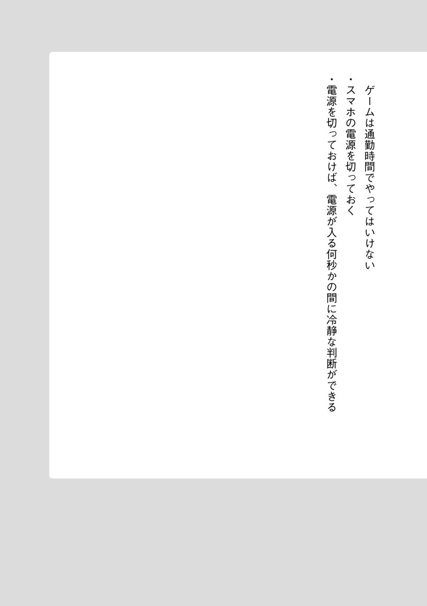
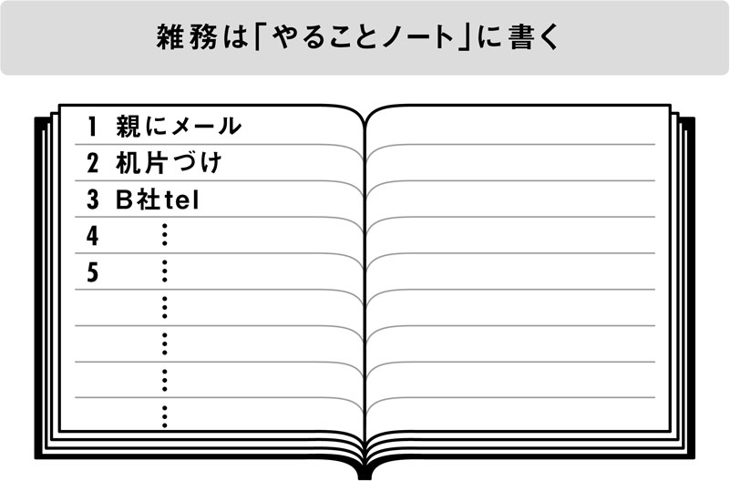
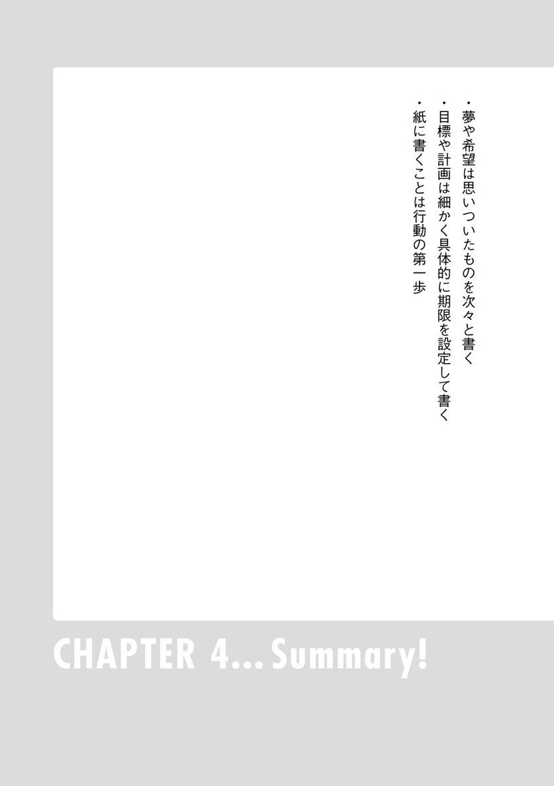
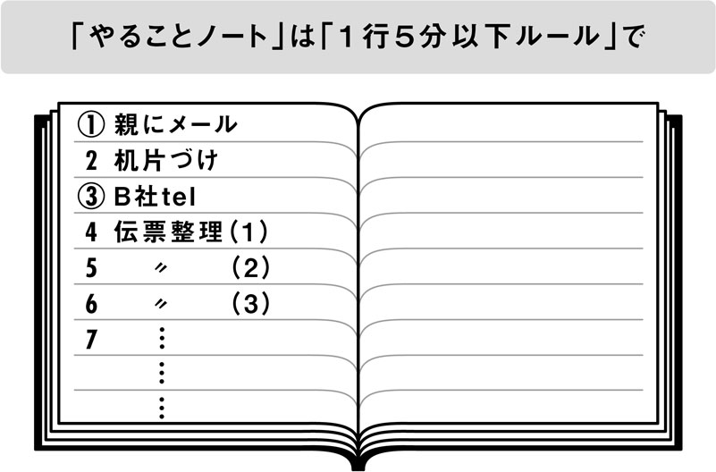
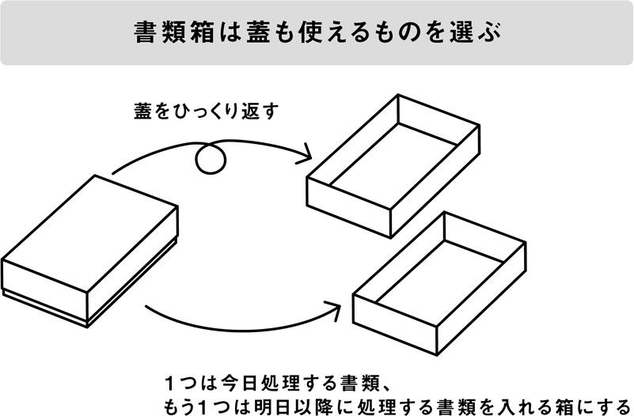
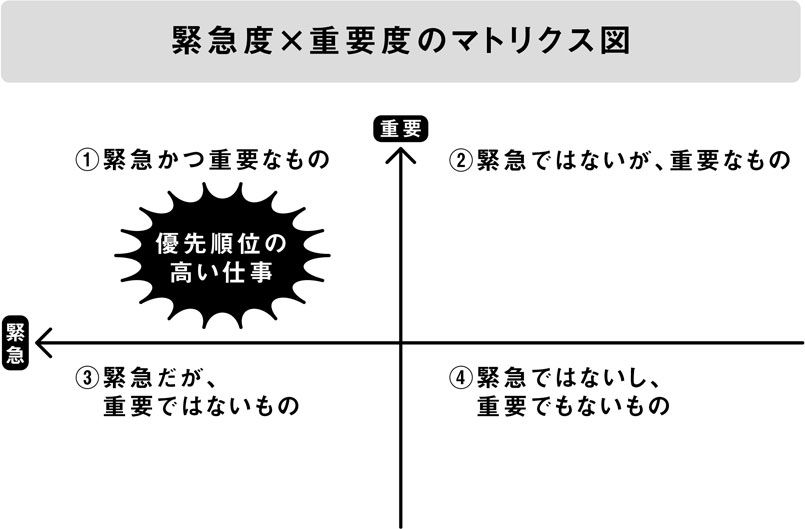
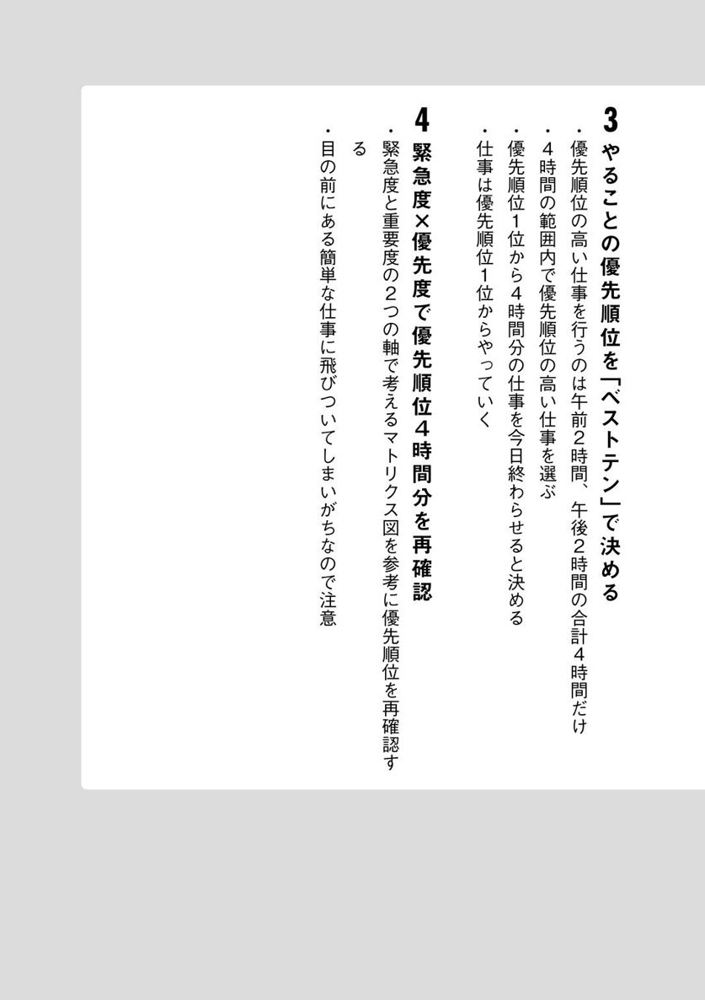
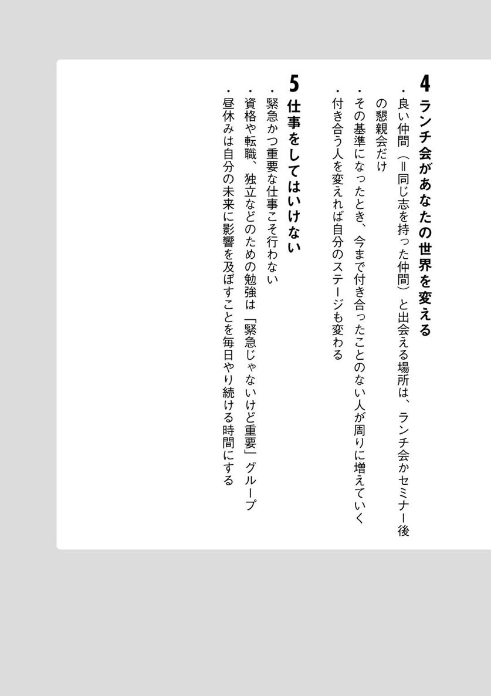
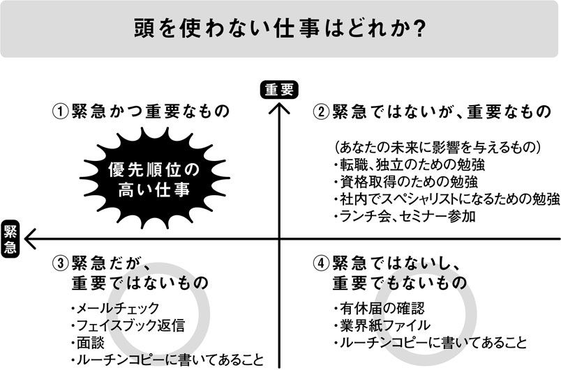
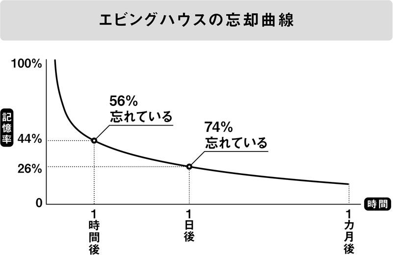

| 30代で人生を逆転させる残業０の時間術 | |
| 石川 和男 | |
| (2015) | |
30代で人生を逆転させる残業0の時間術
漫画、小説、一般書籍 RAW ZIP RAR 無料ダウンロード http://13DL.NET
石川和男
この本を手に取って頂き、ありがとうございます。
今は立ち読み？
それとも購入ずみ？
いきなり「？」で問いかけられても困りますよね。
まるで田舎の友人からの年賀状。普段は音信不通。連絡は年１回の年賀状だけ。
余白には「お元気ですか？」の問いかけが......。
「おい！ その問いかけに、俺はどうやって答えればいいんだ！ 来年か？ ３６５日後に出す年賀状で『元気だよ』と答えればいいのか！ ん？ 待てよ。正確には３６６日後かな？ って、どっちでもいい～」とツッコミを入れたくなる。
あなたをそんな状況にさせてしまったかもしれません。
気を取り直して、この本をどういう方に読んで頂きたいのか、それを簡単にお伝えします。
該当するのは、こんな方です。
・その他大勢から抜け出したい方
・朝は起きられない、気分が乗らない、気分がすぐれない方
・残業せずに帰りたい方
・楽しく仕事をしたい方
・仕事に追われている方
・面倒な仕事を先送りにしてしまう方
・忙しいのに成果が上がっていないと感じる方
・どうやって時間を使ってよいか分からない方
・仕事の依頼が同時並行的に入ってきてイライラしている方
・優先順位をつけられない方
・優先順位をつけたけど、順番どおりにできない方、など
この中に該当する項目があった方、出会って頂き、ありがとうございます！
１日２００冊以上も本が出版されている時代です。電子書籍、メルマガ、ブログまで入れたら、その何百倍もの情報が日々発信されています。
私の本を見つけて頂くのは、年賀状のお年玉１等商品に当たるぐらい、いえ宝くじに高額当選するぐらい難しい確率です。
そんな難しい確率の中で見つけて頂いたのですから、ご恩を返すためにも、必ずあなたの現在そして未来に役立つ内容をお伝え致します。
さきほど「どういう方に読んで頂きたいのか」で例をいくつか挙げましたが、そのうち１つでも解決できたら人生が好転すると思いませんか？
ちなみに、宝くじの高額当選者の９割は、10年後には元の生活に戻ると言われています。しかし、この本に書いてあることを実践すれば、10年後いや20年後も元の生活に戻ることはありませんのでご安心下さい。
この本の最大の特徴は、タイムスケジュールにそって「何をするべきか」を明らかにしているところです。
起床から、通勤準備、通勤中、始業前、始業、午前中、ランチ、午後、帰宅、就寝までを各時間帯に分け、そこで「何をするべきか」を書きました。
今まであなたが上手に使えなかった時間帯があれば参考にして下さい。これは効率的だと思うものがあれば実践して下さい。楽しそうだと思えば取り入れて下さい。もちろん、今まで通りが良いという時間帯はそのままで構いません。自分が最高に良いと思う選択をすることで、問題を解決し、人生を好転させることができるのです。
ではなぜ私が、このような本を書けるのか？
本題に入る前に自己紹介をさせて頂きます。
私は現在、５つの仕事をしています。
建設会社の総務経理、大原簿記学校の簿記講師、プレゼン力養成学校主宰、税理士、セミナー講師。
建設会社は月曜日から金曜日の平日朝８時30分から夕方５時まで。
大原簿記専門学校が毎週日曜日の朝９時から夕方５時まで。
プレゼン力養成学校の講師が月２回の土曜日。
税理士業務、セミナー講師は平日の夜という内訳です。
５つもの仕事をしていると、
「ももクロの百田ぐらい忙しいんじゃない？」
「ＡＫＢ48のセンターぐらい忙しいんじゃない？」
「いや、ラ・ムーの菊池桃子ぐらい忙しいんじゃない？」
「いや菊池桃子はソロのときのほうが忙しいんじゃない？」と世代によっていろいろな意見があると思います。
私自身は、飲み会や遊びに行き、家族と映画やＤＶＤを見て、今までの人生の中で一番楽しく過ごしています。
ただし、楽しく充実した日々を過ごすためには、１つだけ、たった１つだけですが守らなければならないルールがあるのです。
それは、月曜日～金曜日の平日５時まで勤務している建設会社で「残業をしない」というルールです。ここで残業をしてしまうと、ほかの仕事にシワ寄せがきて、遊ぶ時間などがなくなってしまいます。
協力会社を含めて１００億円の売り上げがある企業です。そこでの総務経理自体が、そんなに暇なワケではありません。
では、どうやって５時までに仕事を終わらせているのか？
詳しくは本編に譲りますが、５時までに終わらせるには、期限を決め、優先順位の高い仕事をやりきり、人に任せるなどして効率的に仕事を進めなければなりません。
そのテクニックが、あなたの今の問題を解決するヒントになるのです。
また、この本は現役のサラリーマンが書いています。仕事術の本は、経営者、学者、コンサルタントの方々が書くのが定番です。
現在サラリーマンとして働いている私は、現役で働いている激務のビジネスパーソンであるあなたと同じ境遇です。ですから、理論や学術ではなく実践的なことを書いています。
カリスマコンサルタントと言われているある老先生が、新入社員向けのビジネス書で「雨が降っている日は気分が暗くなるので、職場全体に響く声で『良いおしめりですね～』と明るく言いましょう」と書かれていました。
おしめりなんて新人の山下達男君が職場で叫んだら「オーイ。一瞬で雨が雪に変わったぞ。クリスマスイブ前なのに、というか、まだ４月だけど」というくらい寒い雰囲気になってしまうと思います。
「そうは言っても、税理士を含む５つの仕事。そして出版もしているのだから生まれつきデキる人なんでしょ」と嬉しい誤解をして頂くことがあります。その期待に反して、私はダメダメな人生を送ってきました。
まず、私が通っていた高校は偏差値30の全員合格の高校。大学は名前さえ書けば受かる夜間の学部でした。
ここで注意して頂きたいのは「当時」だということです。斜め読みしている方、ここは一旦、次の一文を熟読して下さい。
「偏差値30は、私が入学した年のズバリその時だけの話です」
前著でも同じように高校、大学の話を書きましたが、同じ出身校の方々から「自分の年代は偏差値30じゃない」とお叱りを受けました。本が売れれば売れるほどお叱りを受けるという悪循環。かなりキレられました。そして嫌われました。
あの当時は『嫌われる勇気』（岸見一郎・古賀史健共著、ダイヤモンド社）も出版されていなかったので、対処法が分からず勇気も出ずにへこみました。『もう、怒らない』（小池龍之介著、幻冬舎文庫）も出版されていなかったので、怒っている諸先輩はじめ関係者各位にお渡しすることもできませんでした。
学校関係者で唯一支持してくれるのは同級生だけ。
「頑張れ」「面白かったよ」「学校の星」と温かい声援を頂きました。
偏差値30の全員合格と暴露しているのになぜか応援してくれる......。仲間というのは不思議なものです。
高校を卒業する基準は「九九の暗唱ができればいい」という都市伝説が噂されていました。さすがにそんなワケはないだろうと思っていましたが、実際は八の段の暗唱ができた友人は無事卒業し、七の段が暗唱できなかった友人は留年しました。
七か八の段が卒業のボーダーラインだったとは......。都市伝説を上回る現実があることを、はじめて知りました。
高校時代の私は、視力検査で「はい。これは？」と聞いてきた検査員に「細くて長い棒ですよね？」と具体的かつ的確に特徴を答えました。すると検査員から「いや、指している棒のことじゃなくて、指されている記号を答えてよ！」と言われました。
あ～そっちと思い、慌てて「シーです」と答えたら、
「いや確かに、Ｃとも読むけど、次の記号は答えられなくなるよ、君......」と言われました。悪気はないのに、嫌がらせをしている子供のようです。
鎖骨は、首と胸の間にある左右の骨ですが、左側半分が左骨（サコツ）で、右側半分が右骨（ウコツ）だと思っていました。「左骨はよくヒビが入ったと聞くけど、右骨はヒビが入ったって聞いたことがないな。そうか！ 右利きの人が多いから右骨は鍛えられていて、折れないんだな」と、学会で発表できそうな仮説を立てて納得していました。
大学に入ってからも相変わらずです。
「発端」を「はったん」と読み間違えていました。牛タンで有名な仙台に「ゆるキャラ☆ハッタン」として実在していそうです（編集者注：実在していません）。
「ほったん」と正しく発音しても、イモで有名な埼玉県川越市の「ゆるキャラ☆堀っタン」として実在していそうですが（編集者注：これも実在していません）。
「妻子」のことは「サイコ」と読み間違え、妻と子が合わさるとホラーの名作のようになっていました。
「書留」は「しょるい」と読み間違えていました。郵便局の窓口に行き、「げんきんしょるいでお願いします」と堂々と真っ直ぐ前を見つめて提出していました。郵便局の皆さんが優しいのか、１００人に１人ぐらいは間違える人がいて当たり前なのか、指摘もされずに普通に受け取ってくれていました。
友人とドライブ中、茶色いレンガ造りの赤いランプがポチっと付いた可愛いケーキ屋さんを見かけました。思わず「あのコバンっていうケーキ屋でケーキを買おうよ」と言ったら、友人に「コバン？ ＫＯＢＡＮ？ え～あれ交番だよ」と冷めた口調で言われました。
──そんな大学生活も、１年留年したのちに何とか無事に（？）卒業し、バブルの波に乗って小さな建設会社に入社することができました。
あれから20年。今では40代になった私が、なぜ効率的に仕事をして建設会社を残業せずに帰り、その他の仕事もソツなくこなしているのか？
結論を言うと、「素直にマネをしたから」です。入社１年目に配属された部署は経理部兼広報室でした。そのときの広報室長から借りた本に「１年で１００冊本を読み、実践すれば、10年後には経営者になれる」と書いてありました。
あの当時の私は本当に素直でした。仮に頭が良くなる壺や、つけるだけでモテモテになるネックレスを上司に薦められていたら、間違いなく買っていました。「あなたもペンギンのように空を飛べる水」という水があっても、何を信じるのか分かりませんが、買っていたと思います。
ここまでくると素直ではなく馬鹿かもしれません。
いや、馬鹿です。そんな私が、会社で地位の高い室長から借りた本の内容を信じないワケがありません。
就職してから毎年１００冊以上のビジネス書を読みあさりました。良いものは取り入れ、実践し、検証し、改良しました。
もちろん「良いおしめりですね～」は取り入れませんでした。
そしてもう１つは、やればできるという信念。
稲盛和夫さんが技術者に話したエピソードが新聞に載っていました。
「ある夜、１人の技術者が製品の寸法がどうしても合わないと悩んでいた。稲盛さんは『神に祈ったのか』とたずねる。『神に祈るしかないほど最後まで頑張ったか』という意味だ。すると彼は再挑戦を決意し、ついに難題を克服する」
このエピソードを読んでから、確かに自分が仕事で悩んだといっても、大した悩みではない、徹底的に調べたり、寝ないでやったり、専門家に相談をすれば解決した問題ばかりだ、まして神に祈るほどの窮地にすら立っていないと思いました。
といっても、本当は「安易な神頼み」の話だと思って最初は読んでいたんですが、これは「もう最終手段で神に頼むしか方法がないほど君は考え抜いたのか、試したのか」という意味だったんですね。
さらに、仕事は自分のできる範囲のものしか与えられないと考えるようになりました。
急に「明日からＮＡＳＡに出向、そしてユーは、すぐ宇宙へ」とか、「山中教授の助手として京都に行ってくれ」とか、「スペインで闘牛と戦う人が不足している。どうかご無事で」とは言われません。
どれだけ難しいと思っている仕事でも、何とか頑張れる。それぐらいの仕事しか回ってこないものなのです。
私が多くのビジネス書を読んで学んだことは、
・自分と大して能力の違わないヤツもやっている。自分にできないワケがない
・このレベルの困難になんて打ち勝ったヤツは大勢いる
・今、抱えている悩みは、世界の悩みランキングの何位だろう？ たぶん１億位にもランキングされてないぐらいの、ちっぽけな悩みだ
という意気込みと信念と思い込みがあれば、大抵の仕事は解決できるということです。
私は、ビジネス書こそたくさん読んでいたものの、20代は怠惰な生活を続けていました。30代前半には、２年間無職で、妻の扶養に入っていました。借金や子供の出産育児一時金で食いつないだ時期もあります。
そんな私でも、変わることができました。１日の時間の使い方を徹底的に見直し、発想を変え、ひたすら勉強をすることで、30代前半の無職生活から40代での５つの仕事へと、人生が逆転したのです。
読者の皆さまに私の１日の時間の使い方を公開することは、少し恥ずかしい気もしますが、あなたの仕事が劇的に変わるお手伝いになれば幸いです。
それでは、今のあなたの現状と比べながら読んでみて下さい。
カバーデザイン
渡邊民人（TYPEFACE）
本文デザイン
森田祥子（TYPEFACE）
校閲
鷗来堂
目 次
CHAPTER 1 ［起床］すっきり目覚め、ポジティブに１日を始める方法
CHAPTER 2 ［通勤準備］たとえば50分の準備を20分に短縮する
CHAPTER 3 ［通勤中］その他大勢から抜け出すための出社の技術
CHAPTER 4 ［始業前］無駄なく雑務を片づける助走タイム
CHAPTER 5 ［始業］仕事は「完全見える化」でストレスフリーに
CHAPTER 6 ［午前中］最も重要なガムシャラタイムの使い方
CHAPTER 7 ［ランチ］自分の未来のための活動に使う（もしくは昼寝）
CHAPTER 8 ［午後］前後半に分けて後半に２時間集中する
CHAPTER 10 ［就寝］新しい朝を迎えるためにすべきたった１つのこと
（あなたが「変えよう!!」と考えた箇所を書き込めます）
カーテンの隙間から射す光。スズメの鳴く声。キッチンから漂うコーヒーの香り。幻想的な静けさから一瞬で現実社会へと引き戻しにくる目覚まし時計の音。針は７時。「もうこんな時間か？ そろそろ起きないと」と思っても起きたくない。寝返りを打って羽毛フトンを抱きしめながら、「なんだか気分が乗らないな～。何か分からないけど気分が落ちてるな～」。
そんなネガティブな朝を迎えたことはありませんか？
「そんな朝あるな～」と答えたあなたは、覚えていない夢に原因があるのかもしれません。
あなたは毎日どんな夢を見ていますか？
「毎日なんて見てないよ」と答えるかもしれませんが、覚えているかどうかは別として、夢は毎日見ていると言われています。
どんな夢を見るかは、希望や願望などのポジティブな気持ちが強いときと、ストレス、不安、心配事、恐怖などのネガティブな気持ちが強いときとで異なります。
夢の７割は、ネガティブな悪い夢だという説もあります。
夢の内容を覚えていれば、悪い夢でも原因を究明し、拭い去ることができます。仮にあなたが夢の中で『名探偵コナン』の世界にいて「コナンが工藤新一だってこと、い・い・加・減・に・気・づ・け・よ！ 蘭!!」と言い放ち、光彦たちに怒鳴られ、歩美に泣き叫ばれアニメの世界のキャラたちに嫌われたとしても、目が覚めれば夢だと認識して払拭することができるのです。
問題は内容を覚えていないとき。寝覚めが悪い朝は、覚えていないだけで悪い夢を見ていた可能性が高いのです。
ホラー映画でたとえると、
「ゾンビに追いかけられる夢」
「サイコのようにシャワールームで襲われる夢」
「エルム街の悪夢のような、まさに悪夢！」
あなたは覚えていないだけで、そんな夢から目覚めたばかりなのかもしれません。
では、どうするか？
目覚めたときに、その夢を一瞬で消し去る魔法をかけましょう。
その魔法は、実に簡単です。
「明るく元気になる曲♪♪」で起き上がる、それだけです。
そう、起きるのではなく、まさに起き上がる。
映画『ロッキー』や『ＴＡＸ』のテーマ曲、アントニオ猪木の入場曲「炎のファイター」などが個人的にはおすすめです。タイマーにして最初は音量を低く、そこから徐々に音量を上げていく。毎朝の目覚めにヤル気がみなぎります。ロッキーがゾンビを退治し、猪木がフレディを追い払ってくれます。そして起こしに来た妻子がサイコを闇に葬ってくれます。
映画を見ていない方や、プロレスファンではない方には、「ももいろクローバーＺ」や「ＡＫＢ48」などが歌う、明るくて元気になれる曲もおすすめです。
記憶は次々と新しいものに塗り替えられていきます。起きて寝ぼけて何もしないよりも、明るく元気になる曲を聴いて悪い夢の記憶を塗り替えましょう。
ここで注意して頂きたいのは、「自分の好きな曲を選んではいけない」ということです（もちろん、好きな曲が明るい曲なら問題はありません）。
好きでもダメなのは、以前付き合っていた人との思い出が詰まった曲。
「本当に、あなたって女々しい！」が彼女の最後の言葉だったのに、毎朝起きる曲が「女々しくて」だと、それこそ女々しい。
９年前に別れた女性に、「10年後の８月にまた会えたらいいね」って気を遣って言われたのに、毎朝ＺＯＮＥの「secret base～君がくれたもの～」で起きる。起きようとしているはずなのに、羊を数えるように来年の８月までの日数を数えてしまう。
自分で作ったオムニバス（コンピレーション）ＣＤ。
いつも一緒にいたかったと言った後に、一生一緒にいてくれやと高飛車にお願いしたり、でも会いたくて、でも会えなくてと迷ってみたり、粉雪が降ったり、ずっと好きだったんだぜと叫んでいるオムニバスＣＤは、夜１人で酒を飲みながら聴いて下さい。
以前付き合っていた人との思い出の曲、人生で最高に良かったと思えるときの曲、懐かしい曲などでは、しばらく起き上がることができなくなります。まぁ眠れなくもなりますが。
まずはネガティブからの脱出！
明るく楽しく元気になれる前向きな曲で起き上がりましょう!!
明るく元気になれる曲で悪い夢を拭い去ったあなたは、出社準備のためにリビングにやって来ました。
「よし！ 今日は明るい朝を迎えたな～」と安心するのは、まだ早い。
ネガティブ・ワールド全開にさせるワナがリビングにも仕掛けられています。
それは、テレビの情報番組。
テレビ全般が悪いと言っているわけではありません。会社から帰って、ホッピー片手に好きなドラマやスポーツ観戦。気分転換に持って来いです。語学やクイズで教養を高める。テレビには良い要素がたくさんあります。
ここでは、朝、そして番組の内容に注意しなければなりません。
朝はニュースを流す情報番組が多く、その内容も殺人、強盗、虐待、いじめ、クスリ、芸能人の離婚......ネガティブ情報であふれています。しかもチャンネルを変えさせないために人の不幸でＣＭまたぎ。
「桑畑を耕していたクマゴロウ容疑者78歳は、なぜ内縁の妻フクベコさん92歳のアタマをコンニャクで～」でコマーシャル。
「衝撃！ 詐欺の手口。『主人の遺産３０００億円を使いきれません。どなたか親切な方がいらっしゃったら使って下さい』という未亡人から来たメールに、被害者の男性は全財産の５万円をシュレッダーで～」でコマーシャル。
「ＣＭを見せるために人の不幸を利用するな！」と言いたくなります。
木村拓哉主演で「幸せはお金じゃ買えないんだよってことを、僕はお金持ちになって言ってみたい」という宝くじのＣＭがありました。
私主演で「ＣＭは１つの話題が完結したら流すんだよってことを、僕はスポンサーになって言ってみたい」と、スポンサー級の金持ちになって言いたくなります。
では、テレビをつけないでどうするのか？
自分の能力を高めるために、ＤＶＤを見ながら出社準備をするのです。
もう一度言います。
自分の能力を高めるために、ＤＶＤを見ながら出社準備をするのです。
英語やフランス語などの外国語を話せるようになりたい。松下幸之助や本田宗一郎の経営理論を勉強したい。財務分析や経済学を知りたい。ファイナンシャルプランナーや簿記の資格を取りたい。あなたが希望するＤＶＤは、いくらでもあります。
ほかの人は、ニュースを見てネガティブになっています。
あなたは、朝の準備時間でネガティブな気持ちになることなく、自分の力を磨くことで、その他大勢と差をつけることができるのです。
普段、勉強する時間がないと嘆いている方は、この朝の準備時間を利用すれば、毎日20～30分を作りだすことができます。
ＤＶＤは、書店や通販会社で販売しています。また、レンタルビデオ店も、セミナーや講演、自己啓発、語学などのＤＶＤコーナーの品揃えが充実しています。買うより安いし、７泊８日という期限つき。期限は人を燃えさせます。
出社準備をしながらなので、画面にくぎ付けになる必要はありません。実際、集中するのは難しいので、何回も何回も耳に残るぐらい繰り返し流しましょう。
私の書斎には、セミナーを受講したときに購入したＤＶＤや、参加者特典で頂いたＤＶＤが散乱していました。いつか見よう、来週見よう、明日こそ見ようと思っていても、仕事から帰った後や休みの日には、見る気になれません。ＤＶＤは日に日に増えていきます。
光を反射する丸いディスクは、カラス除けに使っているとしか思えない状態で放置されていました。そこで思いついたのが、朝の出社準備の時間だったのです。
ネガティブな情報番組は見たくない。だからといって、掛け時計の秒針が奏でる「カチッカチッカチッ」という音だけが響く静寂の世界で準備するのも嫌だ。ラジオも情報が散漫だと思っていたときに、山と積まれたＤＶＤと目が合いました。
眩しいばかりに陽を反射しているＤＶＤ。カラスならその眩しさに逃げていくところです。私にはその光が、インディ・ジョーンズの発見した財宝のように光り輝いて見えたのです。
朝の準備の時間を使ってＤＶＤを見るとさまざまなメリットがあります。
・ネガティブな番組を見る必要がなくなる
・テレビ番組を見なくても無音の中で準備するという味気なさが解消される
・ＤＶＤが片づく
・スキルや教養が身につく
・その他大勢から抜け出せる
メリットはまだあります。
テレビ番組だと、ドライヤーの音で聞き取れない、シャワーに入る時間には途中で見られなくなる、そのたびに準備の動作が止まってしまう。ＤＶＤだと、巻き戻しや一時停止をすることができます。ＣＭまたぎでイライラすることもない。数えられないほどのメリットで一石何鳥になっているか分かりません。
朝の準備時間にＤＶＤを見ていると、カラス以外の鳥が何羽も集まってくるようです。
悪い夢のほかにも、低血圧、眠りが浅いなどのネガティブを抱えている方もいるかもしれません。そういう方には、お笑い系のＤＶＤがおすすめです。
私は「講師能力を磨くため」との理由にかこつけて、「Ｍ‐１グランプリ」などのお笑い系ＤＶＤをよく借ります。芸人の間の取り方やストーリー展開は、セミナー講師として勉強になるのです。勉強のためと言いながら、朝から家族一同が大爆笑。
講師としての能力を磨くためという目的を達成し、さらに、１日を爆笑からスタートする。そんな素敵な時間を過ごすことだってできます。「１日20分笑うとアルツハイマーにならない」という説があるなど、笑いにはストレスを解消し、免疫力を高め、心身ともに健康にさせる効果があるとされています。
医者や研究者が言っていることを信じない人でも、笑って気分が悪くなるという人はいませんよね。笑いながら怒ることは普通の人にはできません。朝一番に笑うことで、今日１日を明るく過ごすことができるのです。
仕事術のセミナーでこの話をすると「ＤＶＤは無理」という方がいます。
「ＤＶＤデッキを持っていないんです」という理由なら、「買って下さい」とアドバイスをするか、埼玉で一番安い電気屋を紹介することができます。
そうではなく、今までの習慣。人によっては30年以上という長い年月にわたって、テレビ画面の左端に映し出されている時計で時間を管理してきたという方。そういう方が「ＤＶＤは無理。今さら変えられないよ」と言ってくるのです。
ハッキリ言います。それは単なる思い込みです。
勤務時間中のことを考えれば分かります。
「10時から打ち合わせがあるんだけど、テレビつけてくれる？ 今、何時か分からないから」と指示したり、「ちゃんとテレビを見てないと、商談に行く時間に遅れちゃうじゃないか」と叱ったりはしませんよね。
社長が朝礼で「みなさんに残念なお知らせがあります。創業以来25年間我が社の昼休みを知らせてくれていた『笑っていいとも！』が本日３月31日をもって終了致しました。これで昼休みを知ることができなくなります。今後、昼休みの始まりはアバウトになります」という会社もありません。
会社では、掛け時計や腕時計、スマホなどで時間の確認をしています。
テレビ画面じゃないと時間の管理ができないというのは長年の習慣であり、単なる思い込みなのです。
あなたがＤＶＤを見ることを習慣にするか、テレビを見ることを習慣にするか。
『７つの習慣』（キングベアー出版）の、スティーブン・Ｒ・コヴィーも言っているように、習慣は、利益になるように使うこともできれば、破綻をきたすように使うこともできるのです。習慣を使いこなすのは、あなた次第です。
また、セミナー終了後の懇親会で、こんな反論もありました。
「ま、まだ、うちには小学生の子供がいるんです」
それだけ聞くと、私が子供からテレビを取り上げる悪人みたいですが、話の趣旨は、小学生の子供がいてチャンネル権を握られているということでした。
懇親会場の居酒屋で聞きました。カツオのタタキが、ちょうど口の中に入っていました。それがまた意外に大きな冷凍の切り身だったため、すぐに返事ができないのが幸いでした。口に何も入っていなければ、危なく受講生の方に「情けない」と言うところだったからです。
家族が見たい番組を優先して、父親が好きな番組（ＤＶＤ）を見られないなんて、私の子供のころにはありえませんでした。『デビルマン』を見たいのに相撲中継。６時のニュースを見た後は、ローカルニュースに７時のニュース。『水戸黄門』『遠山の金さん』『必殺仕事人』と時代劇のオンパレード。
相撲中継が終わった後の、ほんのわずかな時間に『トムとジェリー』を４分だけ見られる。７時のニュースは土曜日だけは早く終わるので、７時15分からだけ民放の番組が見られる。途中から『翔んだカップル』を見て、前半部分がどうだったかを想像する。ほんのわずかな時間しか、子供にはテレビを見る権利がありませんでした。でも生活は充実していた。テレビが見られない分、ほかの遊びを考え出して、楽しみを自分の力で作り出していたから。
今の子供は好きな番組見放題です。自分で考え出さなくても、完成されたテレビゲームやアプリまでたくさんあります。その代わり、それらがなければ何もできないから、旅行に行くと暇で仕方がない。
テレビと言えば、夜９時から放送されていた洋画劇場。親が映画好きだったので、私は映画だけはよく見ました。
新聞の番組表で『マッドマックス』が放送されると分かった瞬間、それ中心の生活が始まります。食事も風呂も宿題も終わらせ、トイレも済ませて三ツ矢サイダー片手にテレビを楽しむ。この機会を逃したら、いつ再放送されるかも分からない。真剣にテレビにかぶりつきで映画を見ました。
今なら１００円前後でレンタルでき、しかも７日間で好きなときに見ればいいし、巻き戻しも停止も可能。便利になりましたが、今しか見られないという真剣味と集中力がなくなりました。レンタルも録画もできない時代のほうが、当たり前ではない価値を見つけることができ、楽しかったのかもしれません。
話は戻ってチャンネル権。「ま、まだ、うちには小学生の子供がいるんです」と言われましたが、私にも小学生の子供が２人います。
いつものように、朝の準備時間にＤＶＤを流していました。
子供にはまったく無縁の億万長者になる方法。子供の貯金はといえば現在３０００円ぐらい。運用も投資もできない。そんな子供と一緒に、クリス岡崎の『笑いながら夢をかなえる億万長者専門学校』というＤＶＤを見ていました。世界ナンバーワンの成功法のコーチとして有名なアンソニー・ロビンズ氏の直弟子のクリスさん。軽妙な語り口と思わず元気になるポジティブな会話。私は楽しく聞いていましたが、さすがに９歳の娘にはまだ理解できないかなと思っていました。
ところが後日、娘と一緒に遊んでいると、そのＤＶＤから聞こえてきていた「できないと思ったら～やらなければならない」「混乱！ おめでとう」というフレーズを娘がマネしているのです。
ピンチを迎えたとき、その困難から逃げ出さないために口ずさむフレーズ「できないと思ったら～やらなければならない」。
難しい問題に人は混乱する。混乱したときこそ成長のチャンスなのに、その言葉にはマイナスなイメージがある。そこで混乱は良いことだと認識するために使うのが「混乱！ おめでとう」というフレーズ。
そんな言葉を口ずさむ娘。困難な場面になったら、この言葉を唱えてほしい。
芸能人のデキ婚とか薬物汚染を知るよりも、生きるヒントを覚えたほうが、ずっと人生のためになると思うのです。
「朝活」という勉強や自己啓発が流行っていますが、準備をする20～30分の時間を朝活代わりに、ぜひ活用してみて下さい。
ネガティブから脱出するためには明るい曲で起き上がる。
テレビの報道番組を見ないでＤＶＤを流す。
そして、人によってはこれが一番大事なことかもしれません。
ネガティブ脱出３部作の最後を飾るのは、「朝は怒らない」というルールを決めることです。
10人家族でも、４人家族でも、夫婦２人だけでも、家族がいるということは、自分以外の人と朝を共にしているということです。味噌汁の数だけ負のオーラが漂っているリビング。朝から嫌な思いをしたくないなら「朝は怒らない」というルールを決めましょう。
昨日の晩、堺雅人と堺正章ではどっちの演技が上手いかで夫婦ゲンカをしていても、マイ・ベビースターラーメンが勝手に食べられていた夜でも、西野カナのライブ前売り券が売切れていてキレていても、朝は怒らないと決めるのです。
朝の雰囲気があまり良くないと思う方は、ぜひ家族を「スシロー」に連れて行って提案してみて下さい。
「これからは、朝は怒らないというルールにしよう。朝は寝不足だったり嫌な夢を見たりで機嫌が悪いことが多いだろ。お互いに機嫌が悪いと些細なことでケンカになる。意識して怒らないようにしよう。それに、よく考えたら家族全員が集まれるのは朝だけだ。もしパパが朝に怒ったら、次は『くら寿司』に連れて行くよ。しかも、そのときパパは寿司を食べずにラーメンだけで我慢することを、ここで宣言しよう」
会社で上司の犬の世話をさせられたり。
近所のオバサンにゴミ出しのゴミの位置で小言を言われたり。
学校で親友と口ゲンカしたり。
家族が多ければ多いほど、お互いが知りえない、いろいろなドラマが展開されているものです。不機嫌になる事情を誰もがたくさん抱えています。
昼間なら気にも留めない小言なのに、朝言われたら神経過敏で不愉快になる。他人同士なら気兼ねもするけど、家族なだけに言いたいことを言い放題。挙句の果てには大ゲンカ。どちらかが先に家を出るので話も中途半端な状況に。解決していないので、一日中、不機嫌と不満と不安が続く。
そんな状況にならないためにも、意識して朝は怒らないと決めるのです。意識するだけで「普段だったら気にも留めないのに、俺、今怒っているな」と気づきます。
朝は「おはよう」と明るく挨拶をして、「いってらっしゃい」と送り出し、「いってきます」と家を出る。当たり前のことをするだけで気持ちの良い１日を迎えることができるのです。
機嫌の悪い可能性のある皆が一斉に集まる朝のリビング。プロレスで言えばリングです。リングでゴングが鳴らないように、怒らないというルールを決めて明るい朝を過ごしましょう。
グッドモーニングを、本当にグッドなモーニングにするためには、ネガティブからの脱出だけではダメです。決められた時間、つまり出社時間に間に合うように、準備をしなければなりません。
せっかく明るい朝を迎えても、遅刻をすればすべてが帳消しになります。上司に怒られ、嫌な１日を過ごすことになるのです。
朝は早いに越したことはありません。30分前に会社に着くのが理想です。
朝は、着替え、シャワー、シャンプー、トリートメント、歯磨き、髭剃り、洗顔、髪のセットに、綿棒での耳掃除。女性だったら、つけまつげに薄化粧（濃い人もいますが）。
次から次へと準備をしなければなりません。
いつも単調そして無意識でやっている準備。
私の場合は、あえて時間を意識して、キッチンタイマーを使ってゲーム感覚で行っています。
朝の準備は、毎日同じことの繰り返し。ほとんど無意識。これを意識して行うのです。シャワーは10分、髪のセットと耳掃除で７分というように、時間を想定しタイマーをセットしてから用意を始めます。
タイマーを10分にセットしてシャワールームへ。出たらストップのボタンを押す。残り時間は13秒。ドライヤーで髪をセット......４秒残して完了。残り１秒！ ワイシャツのボタンを留め、慌ててタイマーを止める。
まるで、人類の安全を守るためＣＩＡから依頼された爆弾処理班のように、次々と任務を遂行していきます。
朝から毎日スリリングな時間との戦い。自分が主演のアクション映画のようです。時間内にストップボタンを押せたから爆発せずに済んだ。俺のシャワー短縮能力が何も知らずにメロンパンを食べている家族の命を救ったのだ。いや大宮４丁目町内会の平和を守ったのだ（そもそも原因を作ったのも皆を巻き込んだのも私ですが）。
朝の準備をゲームの時間にしてしまうのです。もし時間通りにシャワールームから出てこられなければ、髪のセットの時間を削ります。まるで次の世代にシワ寄せする国の政策みたいに、次にやることに負荷をかけるのです。
目標時間通りに終わらせてタイマーを止める。たったそれだけの行為が朝の時間を楽しいゲームに変えてくれます。
人は本来「なまけもの」ですが、タイマーをセットして目標設定した途端に不思議とスピーディーな「チーター」に変わります。
昨日はトータル29分28秒かかったから、今日は29分20秒で。まるでトヨタの生産方式のように秒単位の戦い。昨日より今日の準備時間を短縮する。たったひとりのＭ（モーニング）‐１グランプリ。
あなたも、爆発する前にスイッチを切る気持ちで朝の準備をしてみて下さい。時間オーバーになっても、家は燃えませんが、気持ちが結構燃えてきます。
人が１日に使える時間は、例外なく全員が24時間です。
「本当は内緒の話だけど。俺、以前に亀を助けた話をしただろ！ そうそう氷川神社の池の前で。小学生に亀甲縛りされていた亀。あの亀、神様の親戚筋にあたる亀なんだって。だからご褒美として、この夏限定で１日30分余計に使えているんだ！」なんて人はいません。
逆に「小学６年生のとき、クラスに弘子ちゃんって可愛い子が居ただろ。お前の隣の席。そうそう弘と弘子でヒロヒロコンビって言われてて、お前が嫌がってた。実は俺、弘子ちゃんのリコーダーを放課後に毎日吹いていたんだ。ドナドナ。ん？ そう、よくある間接キスしたかったみたいな変態的な目的じゃなくて、同じリコーダーで音楽を奏でたいという純粋な気持ちで。えっ？ そのほうが危ない......そ、そうなの？
まぁそれは良いとして、30歳になった今ごろになって『反省しろ』って、いきなり神様に言われてさ。今ごろだよ、今ごろ。そういうわけで、この夏限定で1日30分削られているんだ。
それがまた間抜けな話でさ。神様に耳元で言われたんだけど、あれは弘子ちゃんのリコーダーじゃなくて、隣の席の弘くんのリコーダーだったんだって」
「おい、それって俺のリコーダーかよ～～～」
という人もいません。
北は北海道、南は沖縄まで。いやいや日本国レベルの話ではなく全世界全人類全生物が共通して、利用できる時間は１日24時間と決まっています。
起きてから出社するまでの準備の時間。全ビジネスパーソンにとって、準備は避けては通れない時間です。50分の準備時間を20分に短縮できれば、１日に30分の時間が生まれます。逆に20分のところを50分かけると、１日30分の時間が失われます。
１日24時間は決まっていますが、時間の調整は、自分自身ですることができるものです。
では、どうやって行うか？
時間をお金で買うのです。
１日24時間の中でも、朝の準備時間は特に貴重です。
時間を短縮するためなら、思いきって良い製品を買う。高品質、高性能な製品にお金を使えば時間は短縮され、他の人と差をつけることができるのです。
バスルームや洗面台で朝に髪を洗うことを「朝シャン」と言います。朝シャンという言葉をみんな知っているはずなのに、朝シャンをしている人も多いはずなのに、朝シャンという言葉を口にする人がまったくいないという不思議。
話を戻しますが、髪を乾かしセットするために使うドライヤー。
乾く速さは「風量、風速、風圧」などで決まります。
田舎の旅館に行くと「髪に優し過ぎじゃない？」と思うドライヤーに遭遇します。そよ風のようなドライヤーで、いつまでたっても乾かない。
しかもコードがダイレクトに壁から出ていて盗まれないようになっているタイプ。「いやこれを誰も盗まないから」とツッコミを入れながら、髪を乾かしていくのです。
自宅で使うドライヤーがこの旅館と同じ製品なら、毎朝がイライラとの戦いです。髪が傷まないようにという配慮はナノケアやマイナスイオン効果のあるもので対処して、早く乾く１２００ワット以上の製品で準備の時間を短縮しましょう。
品質の悪いドライヤーは、いつまでたっても半乾き。
ジメジメした頭が、気分までジメジメさせてしまうのです。
シャワーから出たときに、濡れた髪や身体を拭くバスタオル。
吸水力でも朝の準備スピードに差が出ます。
素材によっては、思わず話しかけたくなるタオルもあります。
「えっ！ お前なに？ 水はけ良過ぎじゃない？ もしかして自分のことを高級外車の生まれ変わりだと思ってない？ 完璧なコーティングをしているＢＭＷのように水を弾くんだけど。いや褒めてないから！」と言いたくなります。
タオルが水分を吸収しないということは、髪や身体は濡れたまま。このタオルで髪を拭いて、旅館のドライヤーで髪を乾かすと、家に居ながらにしてミストサウナ状態を味わえます。もちろんとっても不快なミストサウナですが。
早く拭き取り、次の行動に移りたい。
この原稿を書いている途中で気になったので、ネットでタオルについて検索しました。大勢の方が関心を寄せているのが分かります。吸水力や拭き心地についての質問や疑問が多く寄せられています。
タオルの素材にもピンからキリまであります。朝の貴重な時間を早く、そして気持ちよく快適に過ごしたいなら、多少値段が高くても、柔らかくて、肌触りが良く、吸水力の高いタオルを使いたいですね。
サラリーマンなら毎朝剃る髭。生やして出社していい会社も増えましたが、禁止にしている会社のほうがまだ多い。
新入社員のころは「人類はもうかなり進化しているんだから、毎朝剃る髭はいい加減退化してもいいのにな」と思っていました。
ここに４０００円と１万円の電気シェーバーがあります。
前者は経済的ですが、剃るのに毎朝10分間。しかも剃り残しアリ。
後者は高価ですが、剃るのに３分間。しかも完璧な仕上がり。
金額で検証すると前者のほうが６０００円お得ですが、時間で検証すると後者は毎朝７分間も短縮できる。
差額である６０００円の使用料金は、１００日使って１日60円。１年で３００日剃るとしたら、１日平均20円の差でしかないのです。さらに５年は使えるとして１日平均４円。４円ケチって１日７分間を無駄にするか？ ４円出費して７分間の時間を得するか？ 私なら７分間を短縮できる１万円の電気シェーバーを選びます。
完璧な仕上がりで時間も短縮できたほうが気持ちも引き締まるし、洗面台を独占する時間も減ることになるのです。
高級志向とか贅沢とかではありません。目先の利益よりも、長い目で見たときに得をするか損をするかで考えるのです。
高級志向で思い出しました。
「あなたが、もし30万円のロレックスの腕時計が欲しいと思ったら、家族をどのように説得しますか？」
『「仕事」に使える数学』（ダイヤモンド社）の著者で、ビジネス数学の第一人者で友人でもある深沢真太郎さんのセミナーを受けたときに出された問題です。
30万円の腕時計が欲しいなんて説得するのは無理だと諦めてしまいがちです。私もどう説得するか悩みましたが、答えは簡単。
まず「１日80円小遣いを上げてくれない？」とお願いして、
「80円ぐらいならいいわよ」と言われれば説得成功です。
たったこれだけ。
ロレックスはあなたが知っているように高級時計です。購入したら少なくとも10年は使えます。
10年間使うとして、３６５日×10年で３６５０日。
30万円を３６５０日で割ったら１日約80円。
これが「１日80円小遣いを上げてくれない？」のカラクリです。
このセミナーを受けて思いました。先ほどの電気シェーバーにもつながる話ですが、モノの価値は、金額だけではなく使用できる頻度や期間や満足度を考慮に入れる必要があるのです。
私は10代のころから髪の毛にコンプレックスがありました。太くて硬くて量が多いので、まとまらないのです。
理髪店に行っても、髪を切るのに時間がかかります。仲の良くなった理容師から、「ハサミがすぐダメになるからハサミ代が欲しい......冗談だけどね」と行くたびに笑いながら言われていました。ただ、目が笑っていたことは一度もありません。
ほかの理容師には「パンチパーマかスキンヘッドかどちらかを選びなさい」と言われる始末。どちらの理髪店からも足が遠のいた悲しい青春時代。
伸びるのも早く、末広がりに伸びていくので縁起は良いかもしれませんが、収拾がつかない。目覚めたときの寝癖は、髪が左右に逆立ち、鏡に映る姿は「金持ちの家で育てられた太った犬のパピヨン」みたいでした。
30代、40代と歳を重ねるごとに髪が多いことは恵まれていると思うこともありますが、髪のセットに時間がかかることには変わりはない。ほんの２年ほど前まで、スーパーハードのムースを１カ月に１本使いきるペースで髪に塗りつけ、ブラシで押さえつけながら１２００ワットのドライヤーをあてて固めていました。まるでスプレー１本を使って髪を立たせているパンクロッカー並みの大変さです。
今は時間をお金で買っています。美容院で髪を立たないレベルまですいてもらい、特殊な成分の入ったカラーを使って、髪の毛が膨らまないように落ち着かせているのです。１カ月に１回行く美容院と特殊なカラーリングはそれなりの出費ですが、朝の貴重な時間を短縮できることを考えたら安いものです。
以前は髪のセットに30分以上かかっていました。
今は何分ぐらいだと思いますか？
答えは０分。
ビジネス書じゃなかったら０分の後にを入れたいところです。
洗ったまま自然に乾かして完了です。ドライヤー要らず。もちろんムースもジェルも何もつけずに出社です。
毎朝の準備時間は使う製品によって差が出ます。プライベートで出かけるときにも必ず準備をします。毎朝10分の短縮でも、一生で考えたら途方もない時間です。
お金だったら使った分、もう一度稼げば戻ってきます。時間は何があっても絶対に取り戻せません。今この瞬間より以前の時間を取り戻す手段はないのです。
１日24時間という全人類が平等に与えられた時間。この時間を有意義に過ごすために、お金で買える時間は買ってしまいましょう。
ひとりモーニング‐ワングランプリ、略して「ひとりＭ‐１グランプリ」を開催して昨日の自分と競いました。セットしたタイマーを時間内に止め、今日も家族の平和を守り抜きました。２次災害を考えると周辺住民の命も救っていたかもしれません。昨日の自分より確実にレベルアップもしています。
『バカの壁』（新潮社）の著者である養老孟司さんの「昨日の自分と今日の自分とは違うのです」という言葉をふと思い出しました。
朝の準備はスピード、スピード、スピード。
身支度をするという目的だけなら競い合いです。１秒でも早く済ませて違うことに時間を使ったほうがいいのです。
ただし、３つだけ例外があります。
１つめは「歯磨きだけは急がない」ということです。
この本を読んで実践して頂いた方からクレームが来た場合のことも考えて、また私自身が本当に実践していることとしてお伝えします。
バスルームから飛び出してマッハで準備。次から次へと記録更新。このペースなら日本新だ。いや１人で開催しているから事実上の世界新だ。そんな思いで歯ブラシを口の中に。56秒で終わらせようと勢いよく磨いている間に、歯ブラシを歯茎に強打。白い歯磨き粉に血が混じってピンク色に。桜、ピーチ、ピンク・レディーにピンクの電話......ピンクは癒し系の色だけど、このピンクには気が滅入る。
歯磨きだけは気をつけて下さい。歯茎を傷め歯医者に通うことになったら、それこそ時間の無駄になってしまいます。
歯は本当に大切です。一昔前に「芸能人は歯が命」というコマーシャルがありました。あれは一般人にも当てはまります。
先日、奥歯が化膿し、抜くことになりました。
「もしかしたら、この奥歯だけは現存する唯一の乳歯かもしれない」と35年前に永久歯に替わっているのに現実逃避。
「ところでお前『永久歯』って名乗っているくせに抜かれるんだな。じゃあ永久じゃないだろ！ 永久歯なんて名乗ってないで『途中死』とかに名前を変えろよ！」と歯に逆ギレ。
しまいには「第３の歯とか生えてこないかな～？」と第３のビールを飲みながらの新提案。そんな夢も希望も打ち砕くような歯医者からの「入れ歯かブリッジだね」の二者択一。どちらにしても歯がなくなることには変わりありません。
「今まで35年間ありがとう。悲しいときも辛いときも『歯』を食いしばって頑張ってきた。あっ！ 食いしばっていたのって実はお前だったんだな。小学５年生のとき初めて一緒に食べた牛のステーキ美味しかったね。つい誘惑に駆られてハイチュウを嚙んじゃってゴメン、詰め物が取れちゃったね。そうそう覚えているかな？ 嚙み切れなかったホルモン。なんとか飲み込んだんだよね」
一心同体のように付き合ってきた歯。いや本当に一心同体だったけど、お別れのときがやってくるのです。
その歯の治療を終えた後、さらに驚愕の事実。
最終検査で６本も虫歯が見つかり、治療をすることに。執筆中の今も時間を切り詰めて通院中です。
だからあなたも、歯磨きだけはひとりＭ‐１グランプリから除外して下さい。
「急がば磨け！」と急いで磨いて毎朝の時間を短縮できても、歯医者に行って治療をする時間、痛み、ストレスに比べたら、隅々まで時間をかけて磨いたほうが結果的に良いのです。
２つ目は、どうしても眠いときの対処法。
目覚まし時計で目を覚ます。時計を見ると朝７時。「自分だけの秘密だけど、実は時計を10分進めているんだ。まだ6時50分。あと10分は眠れるｚｚｚ」と目を閉じる。羽毛フトンを抱きしめて極楽気分で寝ていると、気づいたときには７時半。今日もまた遅刻確定。
私が20代だったころのいつものパターンです。慌てて髪を濡らしてシャツに手を通しながら、歯も磨かずに満員電車へ。汗だくの体は、汗くさいのか大丈夫なのかも分からない。ただ、満員なので他の乗客は逃げられないということだけが分かっている。肩身の狭い思いをして、歯も磨いていないので鼻呼吸だけで電車で通う。
こんな状況では朝から笑顔になれません。会社に着いたら、顔も上げずにひたすら頭を下げて「すいません」から始まるネガティブキャンペーン。
この繰り返しでは仕事をする以前の問題です。
ここで、ちょっと頑張れば遅刻をしないですむ方法を紹介します。
それは、フトンで寝ないで、バスルームで寝ることです。
昨日の帰宅は３時半。眠たくて仕方がない。毒リンゴを食べさせられた白雪姫ぐらい目が開かない。それでも目覚まし時計が鳴れば、テレビ画面から飛び出てくる貞子みたいに這ってでもバスルームに行くのです。鏡の女王vs貞子。たどり着けたらジャパニーズホラーの勝ちです。いえ、たどり着ければ、あなたの勝ちです。
あとは、バスルームのイスに座りシャワーの蛇口を開きます。全身に当たる飛沫は、マイナスイオンを発生させ、あなたの身体を優しく包んでくれます。目は閉じたままでいいのです。瞑想と言い張って寝ていても構いません。
ロダンの「考える人」のような格好になって、何も考えないで寝て下さい。
フトンで二度寝をすると熟睡して遅刻する可能性があります。
シャワーを浴びていれば、二度寝をしても長く寝ていることがありません。
フトンで二度寝は惰眠をむさぼっているマイナスイメージ。
バスルームでシャワーを浴びながら寝れば、それはまるで朝早くから滝に打たれて瞑想している修行僧のようなプラスイメージ。
どちらも「二度寝」なのに、この違いは何？ と思わず言ってしまいます。
二度寝癖のある方は、ほふく前進でもいいのです。バスルームまで、何とかたどり着いて下さい。たどり着ければ、あなたの気分は爽快です。
国土交通省は、各地の工事現場を対象に作業員の賃金調査を定期的に行っています。作業員の賃金が上昇しているか下降しているかで、公共工事の金額にも影響が出ます。
建設会社にとっては大切な調査です。ランダムに選ばれた作業所は、元請会社の担当者と下請会社の経営者たちが会場へ行き、作成した賃金資料の説明をしなければなりません。
建設関係で働くガテン系。狭い会場に体格の良い人たちが集まっている。10人乗りのエレベーターなら７人で「ブ、ブー」と鳴ってしまいそうなメンバー。用意されたパイプ椅子が、小人の国で作ったかと思われるほど小さく見えます。
普段話さない者同士が、狭い間隔で置かれたイスに座って調査を待つ。自分だけ本を読みながら待つという雰囲気ではなく、ディズニーランドで行列を作って待つのとも明らかに違う雰囲気。自分の縄張りであるパーソナルスペースに入ってこられる不快感で会場は少し殺気立って見えます。
久しぶりに調査が当たった自社でも、例のごとく重苦しい雰囲気の会場に行くことを覚悟していました。元請け担当者である私と、いつも協力して頂いている下請けの社長たちと待ち合わせをして調査会場へ。その輪の中に、社長の代わりに調査を受けにきていた社長夫人がいました。
その社長夫人の香りがメチャクチャ良いんです!!
思わずフガフガしたくなる香り。
この殺伐とした雰囲気を一気に和らげ、ふんわりとして柔らかく、それでいて高級感漂う石鹼の香り。会場を和やかな雰囲気に変えたのです。さっきまでプロレス会場で凶器として振りかぶりそうな雰囲気だったパイプ椅子が、今ではお楽しみ会で行われるイス取りゲームのイスに見えます。
会場のすべてのストレスを解放してくれた香り。
街灯に集まる蛾のように社長夫人のもとに笑顔で集まる男たち（注：実際ではなく、あくまでイメージです）。
調査後にほかの社長たちに聞いたら、
「癒されました」
「幸せな気分になりました」
「世界平和の香りがしました」
「いつもはトンカツ屋でロースの匂いを嗅いでいるのに、今日はローズの香りがしました」
「いや～思わず鼻呼吸をしましたよ」という答え。鼻呼吸については普段から心がけなさいと言いたくはなりましたが、一同大絶賛。
良い香りが、こんなにも人々の心を癒し、雰囲気を良くし、幸せな気分にさせてくれるのだと、はじめて知りました。
この一件から香りの重要性を知り、今では朝の準備の締めに香水をつけています。良い香りが自分をリフレッシュさせてくれるのです。
あなたは、このときの香水の銘柄が気になりますよね。
深夜番組でよくある暴露話。イニシャルトークで誰だかまったく分からない。コマーシャルの後「ついに明かされる」と引き延ばしておいて、実名を言ったときには「ピー」という音。
留守番電話で使われる「ピーという発信音の後にお名前とご用件をお話し下さい」以外でピーの音は使うなよ、と言いたくなります。テレビ関係者だけで盛り上がっている番組は不快ですね。
あなたを不快にさせたくないので、社長夫人に香水の銘柄を聞き出しました。いや、正直に言うとどうしても何の香水か知りたくて、「元請けに変態がいる」と噂されるのを覚悟で、執筆前から社長夫人に電話をして、聞き出していました。
教えてくれた香水の名前はジェニファー・ロペスの「Glow by JLO（グロウバイジェイロー）」。
ジェニファー・ロペスの最初の作品なので、かなり前に発売されたものですが、今でも販売しているおすすめの香水です。ただし女性ものです。
香水は、不快なとき、気持ちを落ち着かせたいとき、忙しいときに気分を落ち着かせてくれます。速さを競う「ひとりＭ‐１グランプリ」には参加させられない一品なのです。
出社準備が終わり、「いってきます」と家を出る。「どこでもドア」でもない限り、会社に着くまで一定の時間がかかります。子供のころは「どこでもドアがあったらいいな～」と憧れました。
「どこでもドア」さえあれば「タケコプター」は要らないなと、どちらも手に入らないのに真剣に考えていました。
「どこでもドア」を使って、寒い冬にはハワイに逃避。波の音を聞き、ヤシの実ジュースを飲み海辺で日焼け。逆に暑い夏には南極へ。オーロラを眺め、ペンギンと遊ぶ。ただし南極は５分ぐらいで身体が冷える。「どこでもドア」から離れたら危険。夏風邪を引いたら長引くからと子供ながらにリアリスト。
現実味がない話なのに、現実味のある対処法まで考えていました。
一瞬でどこにでも行けるという魅力。
しかし、「どこでもドア」が発明されたら現実には大変なことになります。
自動車、航空、旅行、運送業界など、さまざまな業界が成り立たなくなる。キャビンアテンダントやバスガイド、ＪＲの車内販売の売り子さんの制服マニアは悲しみ、佐川男子ファンは嘆くことでしょう。
世界が身近になり過ぎて旅行の醍醐味もない。みんなが快適な気候の国に行き、一極集中どころの話ではなくなる。会社から家まで０分だと、会社以外の人との出会いも付き合いもありません。自由が人を不自由にする。
「もしこの本を読んでいる皆さんがドラえもんの『どこでもドア』を発明したら」（通称：もしドラ）というテーマで論文を募集したら、面白い考えがたくさん集まるかもしれません。いや、むしろ次回作は「もしドラ」シリーズで執筆しようと密かに考えていたら......あった。もう出ていました。『もしドラえもんの「ひみつ道具」が実現したら』（藤野英人著、ＣＣＣメディアハウス）。しかも面白くてクオリティが高い。
もしアンキパンが実現したら受験生に「アンキパン・ドーピング検査」、もしフエール銀行が実現したらスーパーインフレで経済システム崩壊など、ワクワクドキドキする話が満載のビジネス書が既に世に出ていました。
話を元に戻します。
東京都内に通うサラリーマンの平均通勤時間は片道１時間と言われています。
往復で２時間。
年間２７０日勤務すると５４０時間。
往復１時間増えると年間で２７０時間増えます。
あなたの通勤時間を当てはめてみて下さい。
往復１時間＝２７０時間、２時間＝５４０時間、３時間で８１０時間。
１日の労働時間が８時間だとすると、往復１時間で約34日分、往復２時間では約68日分の労働日数。３時間でなんと１００日超えなのです。
この膨大な時間。この時間を有意義に過ごすことで、あなたの人生は劇的に変わるのです。
さて、あなたの通勤手段は何ですか？
電車、自動車、自転車、徒歩、キックボードにローラースケート。どんな通勤手段であれ、２つの種類に分けられます。
それは、本を読めるか、読めないか。
本を読める環境にいる方は、迷わず本を読んで下さい。
読めない環境にいる方は、オーディオブックを聴いて下さい。
もちろん仕事か勉強に関するものだけです。
本を読める環境にいるあなたは、それだけでラッキーです。
資格試験や語学の勉強をしている方なら、通勤は絶好の勉強時間になります。電車ならその空間を自分の書斎に変えることができるのです。
自宅から会社までの停車駅。たとえば京浜東北線なら、大宮駅から次の駅まではこの問題を解く。与野駅に着くまでにはこの問題、北浦和駅までには......と、各駅までの到着時間を期限にして勉強をすることができるのです。
語学も一緒です。川口駅までにこの単語を覚える。赤羽駅まではこの３つの単語、上野駅までは......というように、毎日一定の単語を覚えていくことができます。
期限を決めるという効率的な学習方法を、電車が各駅に止まることによって自然に行えるのです。
私は税理士試験の受験時代に、10名ほどの仲間と自習室で遅くまで勉強をしていました。試験の大半は理論の暗記です。分厚いテキストの丸暗記。
自習室での勉強に飽きたある友人は、テキストを片手にＪＲの駅まで行きました。電車に乗り込み、ひたすらテキストの内容を覚えます。別名「理論の旅」と言っていました。
限られたスペースと次の駅に着くまでという期限。やれることが１つしかない状況も、期限が決まっていることも、どちらも人を集中させます。その友人は難関科目である法人税法に無事１回の試験で合格することができました。
本を読めない環境にいるあなたは、ひと昔前までは本当に大変でした。
満員電車で手作りの単語帳を片手で広げて勉強をする。右手にカバン。左手に単語帳。うまくめくれず２枚めくって次の答えを見てしまう。用紙を詰め込みすぎて、シルバーのリングが閉まらない。
単語帳をあきらめて、イヤホンでシャカシャカと音漏れする音楽を聴いて乗客に迷惑をかける。通勤時は大変でした。
自動車で通勤する人も、ラジオから流れる音楽かニュースを聴くぐらい。
今はラッキーです。「耳で読む本」と言われているオーディオブックがあるからです。オーディオブックは、書籍や講演会、セミナーなどを音声化したもので、別名カセットブック、カセット文庫、ＣＤブックなどとも呼ばれています。インターネットで音声ファイルをダウンロードすることもできるので簡単に入手でき、しかも内容も充実しています。
ただし、マニアック過ぎる勉強だとオーディオブックがない場合もあります。そのときはボイスレコーダーの登場です。自分の声で教材の内容を吹き込んで学習して下さい。吹き込むときと聴くときとで最低２回は学習できるので効果的です。
本を読むことはできないけれど、今はオーディオブックなどを聴くことができる。そんな時代に生まれたあなたもラッキーパーソンです。
資格試験や語学の学習をしている方は、迷わずオーディオブックなどの耳で聴く製品で学習して下さい。本のように自分のペースで進めることはできませんが、耳からしか学べないという選択肢の狭さがあなたの脳を刺激します。
また、１・２倍速や１・４倍速にして聴くと集中力も養えます。60分聴いているのに１・２倍速で聴けば72分の内容を、１・４倍速ならなんと84分の内容を聴くことができるのです。みんなが60分の学習をしている間に、自分だけは84分も勉強できる。
速聴に自信がないという方は、まずは１・２倍速で練習してみて下さい。１・２倍速ならば、慣れれば簡単に聴き取れ、脳の処理速度が速くなったことも実感できます。ぜひ試してみて下さい。
ある雑誌に、電車は情報収集の場だと書いてありました。中吊り広告を見てタイトルから内容を推測したり、女子高生やＯＬの話に耳を傾けて最近の若者の流行りを探ったり、車窓から見える町並みの変化に敏感になりなさい、本なんてどこにいても読めるのだから、電車で本は読むなという趣旨でした。
もしあなたが「ぶらり途中下車の旅」気分で電車に乗っているなら話は別です。広告代理店やマスコミ関係の方なら、情報収集もいいでしょう。でも、そのほかのビジネスパーソンがそんな過ごし方をするのは、それこそ時間の無駄です。
まず、中吊り広告は、遠いと見ることができません。目を凝らして見ていると、勘違いしたヤンキーとトラブルになるかもしれません。
話を聞くのも難しい。通勤電車では大抵みなさん無言です。たまに聞こえてくる会話も、「ほんとムカつく！ 昨日50分も説教されたよ」「マジで！ 50分と言えば１時間10分じゃん。ひくわ」「ほんとひく！ ちゅうか卒業旅行に日本一周しない？」「いいね～。51都道府県まわっちゃう？」「ん？ １個多くね？ ハワイ入れてねえ？」と大声で話している我が家気分の女子高生の会話ぐらいです。とても若者代表の意見や流行とは思えません。車窓は満員電車の熱気で曇り、ガラスの向こうは見られない。こんな過ごし方をしていたら自分の未来も曇ります。
──結局、やることもなくなり、スマホをいじって過ごすことになるのです。それでは、いつまでたってもその他大勢から抜け出せません。座れない、本を読めない、という環境の中でも、耳で聴いて勉強を続けましょう。
座れないメリットは、昨日どれだけ徹夜していても眠ることはできないということです。
本を読むのと同じように、耳から聴いて毎日の通勤時間を勉強にあてる。毎日の積み重ねがあなたの現在と未来に影響を及ぼすのです。
通勤手段が自転車だったら、本は読めず、オーディオブックも聴けません。
せっかく勉強したいという野望に燃えていても、両耳にイヤホンをして自転車には乗れません。ほとんどの都道府県で条例違反になりますし、違反でなかったとしても、危険は危険。片耳だけでも、万一事故にあったら大変です。
事故を起こしてしまったら、過失割合も大きくなります。そして何より自転車も車両です。注意散漫で大きな事故になる場合もあります。
自分の未来を変えるために行っている勉強が、事故を招き、被害者や加害者になって、未来を台無しにするかもしれません。
自転車に乗るときはマナーを守って安全運転を心がけて下さい。
本も読めないしオーディオブックも聴けないなら、その他大勢と一緒じゃないかと思ったあなた、そんなことはありません。
毎日定期的に、そして強制的に運動を続けることができるのです。
勉強よりも運動のほうが、継続するのは難しいと言われています。
勉強は、資格を取る、昇進するといった目標があります。会社に残って30分勉強してから帰るなど、職場でそのままできるので継続しやすいという利点もあります。
運動は、ジムに行くという手間、着替えるという手間があります。そして緊急な仕事で残業が続いたときや、勉強が予定通りにいかずに時間が足りないときなど、つい休んでしまう。
今日こそ帰りがけにスポーツジムに行こうと準備万端で会社に行っても、飲み会や合コンに誘われたら誘惑に負けてしまう。ジョギングしようと着替えても、急な土砂降りに気持ちが負けてしまう。
仕事や勉強と並んで、健康に留意するのが大切なのは分かっている。もしかしたら、これら３つの中で健康に過ごすことが一番重要かもしれない。
現に一流の経営者には、健康管理に十分気をつけ、どれだけ忙しくても定期的にジムやプールに通う方が多くいます。
しかし一般人には、なかなか続かないものです。
そんな継続が難しい運動を、自転車通勤の方は定期的に続けることができるのです。
本も読めない、オーディオブックも聴けない人は、毎日定期的に運動できる。実は１番のラッキーパーソンなのかもしれません。
自分は資格試験も語学の勉強もしていないから電車ではマンガを読んで過ごそう。タイガースが攻めてくる『進撃の阪神』。なかなか定職につかない『ニート鳥耕作』。戦国時代にバカ売れ『信長のシャツ』。そして右手と一緒に実家に帰る『帰省中』。読みたい作品がたくさんあるから、俺もなかなか忙しいんだよ、とマンガを読んでいてはダメなのです。
通勤電車を、あなたの現在と未来に影響を及ぼすことを毎日やり続ける場所にするのです。
「今のままでいい」と考えている人ですら、今のままでいるためには勉強しなければなりません。世界は日々進化しています。あなたの先輩も後輩も進化しています。あなたが現状維持なら相対的に後退するしかないのです。
あなたの目指すところは、どこですか？
好きな会社に転職する。独立開業する。今の会社に残りたい。
好きな会社に転職するためには、希望の会社から引き抜かれるだけの能力を身につけなければなりません。そのためには、その分野の勉強をしなければなりません。
独立開業するためには、マーケティングや経営や会計についての勉強を山ほどしなければなりません。
「転職、独立そんな冒険は致しません。今の会社に残ります」という方も、先行き不安で不透明な現代、生き残るためには専門性を養う勉強をしなければなりません。
言い方を変えれば、スペシャリストにならなければ会社に残るのが厳しい世の中なのです。
どの分野を目指しても共通するのは勉強することです。
では、どのように勉強するのか？
その方法とは、その他大勢から抜け出すプラン・ドゥ・チェックの３段方式です。
まずは、プラン（計画）。
何についての本を読むのか計画を立てます。
営業職でトップセールスマンになりたいなら営業の本。経理のスペシャリストなら会計の本。独立するなら開業の仕組みなどのビジネス書を探します。
電車で読むときの注意点。乱読、速読で冊数を競うのではありません。実践できるところを探しながら読むのです。実践できるところを探すには、ハウツー本がおすすめです。１００冊読むよりも１つの行動。行動してはじめて役に立つのがビジネス書なのです。
読んでいるビジネス書から行動、実践できる箇所を探しましょう。探し当てたらほかは速読しても構いません。
行動できる箇所がないビジネス書なら、見切りをつけて捨ててしまっても構いません。買ったお金より、読んでいる時間のほうが無駄だからです。
通勤時間によって１章、１節、１コンテンツなど読む量は変わっても、実践できるところを探す目的は一緒です。見つけたら熟読する。頭の中で何度もシミュレーションをするのです。
これがプラン・ドゥ・チェックのプラン（計画）です。時間があれば２章でも３節でも４コンテンツでも構いません。そして会社に着いたらドゥ（実行）します。
たとえば営業職で10年目の今年、課長に抜擢されたとします。昇進したのは嬉しいけれど部下がやる気になってくれない。相談なしで勝手に判断してしまう。ミスの報告も遅い。
金曜日も「野村お前、要するに何が言いたいんだ。本当に何が言いたいのか、まったく分からん」と怖い顔をして怒鳴ってしまった。
ちょっと言い過ぎたと反省し、日曜日の午後に本屋巡り。自分が求めていた本を発見。『部下のやる気を引き出す 上司のちょっとした言い回し』（吉田幸弘著、ダイヤモンド社）です。
月曜の朝、電車に乗り込み、さっそく本を開きます。
読み進むにつれ、首筋からじっとりと嫌な汗。ビジネス書を読んでこれほどまでに恐怖を感じたことはありませんでした。
「部下の話が要領を得ないとき」という箇所を発見。
俺の部下と一緒だなと鼻で笑い、実践できるところはないかと探しました。
部下が要領を得ないときに、上司が言ってはいけないＮＧワード。
「要するに、何が言いたいんだ」「何が言いたいのか、まったくわからない」
上司が言ってはいけない悪い例。週末に自分が放った言葉はＮＧだった。しかも２つの悪い事例を組み合わせての罵倒。
さらに読み進めると、こんな箇所が。
「部下の要領の得ない報告にイライラした経験はありますか？」
（あるある、いつもだよ）
「そんなとき、全否定していませんか？」
（している。週末もしたばかりだ）
「このような全否定は、部下から報連相が上がってこなくなります」
（そ、それは困る。俺も中間管理職だし）
「全否定の言葉を怖い顔つきで言う上司に部下は近寄りたくありません」
（自分が部下のときも、そうだったなー。怖い上司には近寄らなかった。考えたら今の自分は威厳を保とうと怖い顔をしているな）
「結果、次のような問題が起きてしまうのです」
（えっ！ ど、どんな問題!?）
「部下が１人で勝手に判断してしまう」
「ミスがあっても報告せず、大きな問題になってから報告する」
「否定されるのを恐れて、無難なことしかやらない」
（そんな会社だったら上司も困るだろ。組織として終わってるな。学級崩壊ならぬ会社崩壊だな......ん？ あれ！ これって今自分が直面している問題じゃないか。部下を教育し直そうと、このビジネス書を買ったけど、原因は自分にあったのか。どうすれば解決するんだ！ 教えてくれ～。いや教えて下さい！ 吉田先生）
普段は指が乾燥して紙をめくるのが大変なのに、変な汗が出ている今は簡単にページをめくることができてしまいます。解決策を探すと以下のような答えが。
「穏やかな口調で次のように話しましょう。
『話してくれて、ありがとう。話を整理したいので、もう一度話してもらえるかな』」
（そうか全否定されたら確かにつらいよな。話を理解するのが目的だし、まずお礼を言ってからか）
「威圧感のある上司を恐れ、緊張してしゃべれなくなってしまう。上司の役割は、部下のモチベーションを上げ、適切な行動を取らせ、最大の成果を生み出すことです。そのためには、上司は部下が相談しやすい雰囲気をつくっておくべきです」
（そうだよな。上司になって、なめられないように肩に力が入り過ぎていたかもな。部下が相談しやすい雰囲気を作って風通しを良くしよう）
──こうして、今日実践しようと思うことを電車の中で何度も読んで理解を深め、会社に着いたら早速ドゥ（実行）をし、帰りの電車でチェック（検証）をします（チェックについては第９章で後述します）。
ＬＩＮＥ、メール、フェイスブック、ツイッターなどのＳＮＳ。ネットサーフィンにマンガ、ゲームに睡眠......。その他大勢の人たちは、これらのどれかで通勤時間を過ごしています。
勉強をしているあなたは、そっと顔を上げて前方に座っている７人を見て下さい。
スマホ（以下スマ）をしている人は何人いますか？
「スマ・スマ・スマ・スマ・スマ・スイ・スイ」
ほとんどがスマホを使用。たまに睡眠（スイ）のハズです。
ちなみに帰りの電車は、
「スイ・スイ・スマ・スマ・スマ・スイ・スイ」に変わっているハズです。
せっかく座れる環境を手にしているのに、こんな時間の使い方をしていたら、氷川神社に棲む亀に１日30分を没収されるぐらいもったいない。
仮にスマホで電子書籍を読んでいたとしても、ＬＩＮＥやメールが来たら気になって開いてしまいます。
友人の「おはよう」というＬＩＮＥの連絡に「おはよう」と返す。
「おつかれ～」という連絡に「おつかれ～」と返す。
「じゃあね～」という連絡に「じゃあね～」と返す。
スタンプが来たら、スタンプで返す。
「こだまでしょうか？」、「いいえ児玉です」と返してしまう。
こんなことをしている間に、すぐに時間は奪われます。
メールが受信されているので開いてみたら
「実は香川県は私の所有物です。先着５名の方に譲りたいの......」とか、
「オオアリクイに主人が締め殺されてから３年がたち......」とか、
「アルパカとカピバラの区別がつかずに困っている24歳の......」などの迷惑メール。そのたびに集中力が切れてしまいます。
ひと手間があると冷静な判断ができる。
たとえば、実印クラスの印鑑は上下の目印がないものが多い。目印がなければ契約書に判を押そうとするときに、印鑑をひっくり返して表を見て、上下の確認をします。そのひと手間が、本当にこの契約書に判を押してもいいのかと冷静に考える時間になるのです。
勉強に飽きたら、無意識にスマホを取り出してＬＩＮＥやネットを見てしまうものです。電源が入っていると一連の動作を無意識に行ってしまいます。電源を切っておけば、電源が入る何秒かの間に、本当にＬＩＮＥやネットを見る必要があるのか冷静な判断ができるのです。
スマホの電源を切ることに対し、あなたは「緊急な連絡が入ったらどうするんだ」と反論するかもしれません。大丈夫です。そもそも電車では電話には出られません。
「緊急なので緊急停止ボタンを押して下さい」と叫ぶほどの連絡もきません。
「この電車にお医者さんは乗っていませんか？」と叫ぶシーンにも出くわしません。
電車に乗っている時間は試験時間だと思って下さい。試験中に携帯を開く人はいません。開いた時点で一発退場です。試験中は電源を切って挑みます。
座れる環境をプレゼントされたのなら、座れない人の分まで頑張ってみる。他の人がスマホをいじっているうちに１００歩抜け出す。そんな心意気で過ごして下さい。
立っている人も一緒です。１・２倍速で流れるオーディオブックに全神経を集中して下さい。
会社に貢献したい。仕事の幅を広げたい。昇進したい。転職したい。独立したい。その他大勢から抜け出したい。人生を逆転させたい。
でも、朝早起きして勉強するのもつらい。会社が終わって自宅に帰ったらビールを飲みたい。なかなか勉強時間を確保できない方は、まず行き帰りの通勤時間で勉強する時間を確保してみませんか。

始業時間にギリギリ間に合うように家を出ると何かと焦ります。心に余裕を持てません。
電車が発車する直前に乗り込んできたサラリーマン。満員の車内に無理やり入り込んできて、カバンがドアに挟まりました。ドアの開け閉めが繰り返されて、始業時間が刻一刻と迫ってくる。
「はい。お荷物をお引き下さい。お荷物をお引き下さい」のアナウンス。
「お前のせいで遅刻するだろう」と昨日は自分が同じ状況だったことも忘れて苛立ってしまいます。
「線路に人が立ち入ったため～」というアナウンスとともに一時停止。
「またかよ。自分が乗っているときに限って立ち入ってくるな。あっ！ そういえば、昨日の飲み会に来ていた女の子が、噂だけど、線路に人が立ち入るアナウンスは痴漢が出たときの隠語とか言っていたな。あの子、綺麗だったけどウオツカとホッケの開きを頼んだときは少し引いたな」と物思いにふけっている間に５分が経過。我に返り、遅刻の言い訳を考えるのです。
やっとの思いで会社に到着。始業時間は８時30分。会社の掛け時計を見上げると31分。自分の腕時計は30分ジャストだったため、「間に合った」と自分だけが納得する。
気配を消しつつ席に座ると、待っていましたとばかりに上司から仕事の依頼。部下からは連絡事項と質問の山。通勤途中でひらめいたアイディアも、急に思い出した用件も、声を掛けられ一瞬にして忘れてしまう。
１分早く着くのと、１分遅刻するのとでは雲泥の差があります。
資格試験を思い浮かべてみて下さい。もしほかの受験生より１分前に試験を受けることができたなら、どれだけ精神的に優位に立てるか。試験問題全体を素読みすることもできるし、解く順番を考えることもできる。何より深呼吸をしてから余裕を持って始めることができるのです。
逆に１分でも遅れて試験会場に到着したらどうなるか。カリカリカリカリとシャープペンシルで問題を解いている受験生たちの間を、ちょっと猫背になりながら、試験委員に誘導されて自分の席へ。精神的な余裕もなく、難しい問題なのか簡単な問題なのかも判断できずに１問目から解いていく。呼吸をすることも忘れ、エラ呼吸している魚みたいに口をパクパクさせてパニックになる。
心に余裕を持って挑めるかどうかは、１分の差でこれほどまでに違うのです。
理想は会社に１番に着くことですが、遅くても始業30分前には出社して、雑務を片づけ、優先順位の高い仕事をする体制を整えておくのがいいでしょう。
私は朝６時に出社してこの原稿を書いています。８時までは誰も来ないし連絡もない。毎朝６時から２時間は原稿を書く時間に充てています。せっかく早起きしたのに時間を無駄にしたくないという気持ちが働くからです。
早起きして勉強すると捗るとよく言われます。早起きして清々しい気持ちになれる。電話やＬＩＮＥ、メールなどの連絡が来ないから集中できる。人から話しかけられない。始業時間までの締切り効果がある。
このように早起きにはさまざまなメリットがありますが、最大のメリットは「せっかく早起きしたのに時間を無駄にしたくない」という気持ちが働くことです。
30分も早く着いたのに、ネットサーフィンをしたり、マンガを読んだり、携帯アプリで遊んだりする人はいません。こんなことをして時間を潰すぐらいなら寝ていたほうがマシだった。その気持ちが優先順位の高い仕事をしようという気持ちにさせるのです。
ここで、10秒あったら何ができるかを考えてみて下さい。
何をしようか考えているうちに10秒なんてあっという間に過ぎてしまう、と言われそうですが、ウサイン・ボルトは10秒あれば１００メートル先まで行っています。１００メートル先......想像してみれば分かるように、かなり先です。角にある看板が「ふくろう専門店」なのか「おふくろ専門店」なのか認識できないほど遠い場所です。
10秒あれば、机を片づけ、鉛筆を削って、ノートを広げる──と、いろいろなことが可能です。じゃあ30分あれば、一体どれだけ多くのことができるでしょうか。
私は、５つの仕事に執筆が重なると、書く時間を捻出するために６時に出社しますが、普段は始業30分前に出社しています。
まず始めるのは、スケジュール帳で今日の予定の確認。会議、来客、銀行回りなどの会社関係から、セミナー、飲み会などの私用まで、すべての予定を書き込んでいます。この１冊で今日１日のスケジュールをすべて把握することができるのです。
手帳やスマホのメモ機能のチェック。自宅にいるときにひらめいたアイディアや連絡事項などをメモしています。アイディアはノートに書き写し、セミナーや飲み会の予定はスケジュール帳に書き写します。
メールの確認。件名が重要そうなら開き、緊急性があればその場で返信します。
業界紙を見る。この時間は「読む」のではなく「見る」という感覚です。大見出しを確認する程度。ただし、自社に関係のある内容だと、取締役に回覧し、打ち合わせの議題にします。
領収書の取り出し。前日退社後に使った書籍代や接待などの領収書があれば財布から取り出します。クリアファイルに入れて始業後に担当者に渡します。
通常、これらの雑務にかかる時間は３～５分。ただし、重要なメール返信や業界紙で緊急な記事があるときは、15分ほどかかるときもあります。
雑務といっても、スケジュールの確認には緊急性があります。自宅に帰ってからビールを片手に、過ぎ去った今日１日のスケジュールをはじめて見ても意味がありません。意味がないどころか、重要な予定が入っていたかもしれないスケジュール帳を開くのは、どんなホラー小説を開くことよりも怖いことです。
雑務は簡単な作業が多いため、短い時間で次から次へと片づいていきます。これで達成感が得られます。
ただし、雑務の処理には注意が必要です。
私は以前、細かい雑務をすべて朝一番にやっていました。ノートに書き出した雑務が終わるたびに、赤いペンで番号に丸を付けていくのです。丸が増えていく達成感。達成感を得るために一気に雑務を終わらせたくなりますが、ここは我慢。雑務の時間は、始業前までとか15分間とか、「自分ルール」を決めておいて下さい。
たった３分で終わる雑務も、１００項目あれば３００分（５時間）かかります。優先順位の高い仕事をやろうと思ったときには、もうヘトヘト。午後の３時か４時に優先順位の高い仕事をやろうと思っても、オヤツを食べる時間から始めるのでは既に集中力が切れています。仕事をした気になっていても、優先順位の高い仕事はまた明日へと先送り。忙しいのに成果があまり出てきません。
だからといって、雑務を頭の片隅で覚えておきつつ、優先順位の高い仕事をしようとしても、気になって集中できません。
では、どうするか？
雑務はいったんノートに書いて後回しにするのです。
ノートに書いておけば、頭の中はクリアになり、目の前の仕事に集中できます。優先順位の高い仕事を終えて、時間のあるときに緊急性の高い雑務からやっていけばいいのです。
やることを書いていくノートを、そのままですが「やることノート」と私は呼んでいます。

また、通勤途中でひらめいたアイディアを、出社したときには忘れていたりすることはありませんか？ 「すごく良いと思ったアイディアなのに思い出せない。自分は記憶力が悪いのかな」と不安になりますが、ちゃんとした理由があるのです。
アイディアは右脳でひらめきます。そのひらめいたアイディアを記憶するのは、実は左脳なのです。ひらめいたまま放置していると、左脳に定着しないまま忘れてしまいます。「良いことひらめいたな」だけでは忘れてしまうのです。
忘れないうちに手帳に記録することが重要です。私の場合は手帳やスマホのメモ機能に記録をしておき、会社に着いてからノートに書き写すようにしています。
以前、ひらめいたアイディアをメモしないままエレベーターに乗ったところ、社長が乗り込んできたことがありました。
私の部署が７階で、社長は９階。滅多に会うことはありません。私が先に降りるその瞬間に、社長から「石川君......顔が残念だな」のひと言。そしてエレベーターが閉じる「チン」という音。その音とともに顔が赤く茹で上がり、アイディアも湯気と一緒にどこかへ消えていきました。
教訓、記憶に頼らず記録する。
そして記録するときに注意することは、できるだけ詳細に内容を書くこと。
書いているときの自分と、書いた内容を読んでいるときの自分は違うのです。この数字は何？ これは何を意味していたのか？ と迷うことになります。
スマホのカレンダー機能を使ってスケジュール管理をしているのですが、６月23日12時30分の欄に「ひなた」と記入がありました。ひなた？ 女性？ 誰？ 12時30分だと昼だからランチ？ 全然約束した記憶がない。いや絶対に約束をしていない。
この子は誰？ 何歳？ 名前から考えて平成生まれ？ 何が目的で俺に近づく？ ワナか？ 専務の仕掛けたワナか？ と途方に暮れていました。
まだ日もあるし後から考えようと、組んだ手を首に回しイスにもたれ掛かった瞬間、思い出しました。
「ひなた～」「あ～ひなた歯科だぁ～」
会社のイスにもたれ掛かるのと、治療を始めるときのリクライニングするイスが似ていて、そこからひなた歯科を連想することができたのです。謎が解けて嬉しい気持ちもありますが、何とも言えない疲労感。普通は思い出せてスッキリなのに、なぜかガッカリ。
メモを残すときに、運転中や打ち合わせ中などで書く時間が限られている場合があります。そのときにはキーワードしか書けませんが、それでも、なるべく早く具体的に書き写すようにして下さい。
メモは具体的に書いておくのが困らない秘訣です。
山口勉（仮名、34歳）──。
明るく楽しい曲で起き上がり、伸びをしながらリビングへ。「おはよう」と明るく挨拶をした後は、テレビのリモコンに手を伸ばし、入力切換を１にする。
ＤＶＤデッキには１週間前から始めた英語のＤＶＤが入りっぱなし。リモコンの再生ボタンを押して昨日の続きを勉強する。この一連の動作。起き上がってから、わずか58秒。
「すげー俺。もしかしてだけど、もしかしてだけど、起き上がって世界最速で勉強している人なんじゃないの～？」と鼻歌混じりに自画自賛しながら発音の練習。ゆりかごには１歳の息子。流れてくる英語の音をニコニコしながら聴いています。ときおり「ピーチュ♪ ぴーちゅ♪ ピース」と発しながらパパの顔を見ています。
この息子こそ32年後、内閣総理大臣に任命され「全世界平和連合」を立ち上げ、初代会長に就任。世界の紛争、食糧危機などを次々と解決し、人類の平和を守る救世主になるとは、この時点では誰も気づいていないのでした。
その後、４歳の娘を保育園まで送った後は、電車内で会計の本を１章分読む。先日の会議で取り上げられた経費の削減を調べ、会社に着いたら実践する予定です。
明るく楽しく充実した気持ちで会社に着いたあなたは、もう充分にポジティブワールド全開ですが、ここでダメ押しアイテムの登場です。
「未来計画ノート」を眺める。そして未来の自分を描く。
前著『30代で人生を逆転させる１日30分勉強法』（ＣＣＣメディアハウス）でも、「目標は絶対お願いだから紙に書いて下さい」とお伝えしました。
『思考は現実化する』（きこ書房）の著者であり、成功者の研究に一生を捧げたナポレオン・ヒル。
そのナポレオン・ヒルが成功者５００人にインタビューして判明した、彼らが共通して行っている成功哲学。それが「目標は紙に書くこと」なのです。
私は、28歳から目標を書きはじめました。目標といっても、夢や希望や願望を交えた計画ノートです。夢や希望は思いついたものを次々と、目標は細かく具体的に期限を設定して書きました。
最終的には税理士試験に合格して独立する計画でしたが、いきなり試験は受けられない。そこで建設業経理事務士２級は29歳の３月。１級は30歳の３月。税理士試験の簿記論と財務諸表論を31歳の８月......。33歳にはワードの達人。34歳にはエクセルの達人。独立したら顧問に両親、法人税担当には山崎、営業は長谷川......など、合格後の会社形態まで計画してノートに書いていました。
何年かはノートを見直して追加修正していましたが、いつしかナポレオン・ヒルのこともノートの存在も忘れて、確認も記入もしなくなりました。
10年ほどたち、机の３番目の引き出しの奥に入っていたノートを発見して驚きました。主要な目標は、すべて現実になっていたのです。日商簿記、建設業経理事務士、宅地建物取引主任者、税理士などの資格取得。３階建ての家や外車の購入。独立開業、簿記講師、セミナー講師、出版......。
あの当時に「セミナー講師になりたい」ましてや「出版したい」とまで思っていたとは自分自身でも忘れていました。これがナポレオン・ヒルのいう潜在意識なのかと改めて驚きました。
30代後半になって、改めてナポレオン・ヒルの著書を読み直し、目標を紙に書くことの重要性を再認識しました。多くのビジネス書を読むにつれ、たくさんの成功者が目標を紙に書き、思考を現実化させていることも知りました。
サッカー日本代表の本田圭佑選手は、ワールドカップで有名になって外国チームから呼ばれ、ヨーロッパのセリエＡに入団、レギュラーになって10番で活躍しますという趣旨の作文を小学校時代の文集に書いています。具体的に夢を描き、現在、所属チームのＡＣミランで背番号10番をつけて活躍中です。
お笑いコンビ、スリムクラブの真栄田賢さんは、願望ノートに「Ｍ‐１決勝進出」そして「松本人志から96点」と記入していました。決勝進出、そして驚くべきことに松本人志がつけた96点までズバリ実現しました。
世界で１億部以上売れたという『こころのチキンスープ』シリーズの著者で、講演家としても有名なマーク・ビクター・ハンセンは、常に目標を書いたカードを持ち歩き、心からそれを信じています。また鏡の横に目標を書いた紙を貼り、毎日チェックしているそうです。
俳優の渡辺謙さんは、１年後の自分の姿をイメージして手紙を書くことを25年以上も続けています。これから自分がどうなりたいかを手紙を書きながら想像することは、自分自身の確認にもなると言っていました。
司法試験業界のカリスマ講師である伊藤塾の伊藤真先生。授業では、生徒が授業開始の日に「合格体験記」を書きます。まだ受験をしていないのに、まるで合格したかのような気持ちで書かせる。より具体的に書くことによって合格しているという気持ちが強くなり、多少のスランプや挫折も想定の範囲内と考えるようになる。生徒たちは、無事にスランプを乗り越え、継続して勉強し受験の日を迎える。伊藤塾が多くの合格者を輩出している理由の１つです。
そのほか、『非常識な成功法則』（フォレスト出版）の著者で経営コンサルタントの神田昌典先生、速読法フォトリーディングの公認インストラクターの山口佐貴子先生、宝地図の望月俊孝先生、野球のイチロー選手、ゴルフの石川遼選手、テニスの錦織圭選手、東大家庭教師の吉永賢一先生、陸前高田市の久保田崇副市長......。
夢を紙に書いている成功者は、数え上げたらキリがありません。
しかし、あなたはこう言うかもしれません。
「たまたま紙に書いて成功した人が何人かいただけじゃない」
その気持ちは分かります。
中学時代のワル体験のおかげで実業家になれたと豪語する人がいるからといって、ワルだった人がみんな実業家になれるわけではありません。トイレ掃除は素晴らしいことですが、それだけで成功者になれるなら、清掃のおばちゃんは皆さん成功者になっているはずです。
ただし、こちらのデータをご覧下さい。
ミシシッピ大学の卒業生が40年後どうなっているのかを追跡調査した貴重なデータがあります。
Ａグループ 社会的に大成功をしていた（３％）
Ｂグループ かなりの成功をした（10％）
Ｃグループ 普通（60％）
Ｄグループ なんらかの援助が必要（27％）
この中のＡグループに属した卒業生には、ある共通点がありました。
全員が「具体的な目標を紙に書いていた」ということです。
Ｃグループには抽象的な目標が、Ｂグループには具体的な目標がある卒業生もいましたが、目標を紙に書いていたのはＡグループだけだったのです。
アメリカの社会学者ロバート・Ｋ・マートンは、この現象を「予言の自己成就」と名付けました。ここでいう予言は「思い込み」という意味です。紙に書き出した願望は、意識、無意識に関係なく実現すると思い込んでしまう。そうしたら最後、思い描いたとおりになるように行動してしまうと言っています。
本田選手の現在の活躍も、具体的に卒業文集に書き、思い描いたことによって、思い込みになり、現実になったのかもしれません。
思い描いたことを紙に落とし込むことで、思い描いた人間になる。まさにナポレオン・ヒルと同じ考えです。
そして、もう１つ。紙に書くことのメリットを私なりに考えました。
目標を頭で描いているだけでは、まだ妄想の段階。紙に書いてはじめて具体的なイメージが湧き、客観視もできるのです。
ほんの小さなアウトプットですが、行動の第一歩には違いありません。行動は実現の扉を開き、目標を叶えるために必要なモノを準備するようになります。
たとえば「縁あって経理部に配属されたのだから経理のプロになろう。最終的には税理士の資格を取って開業しよう」と思い、「税理士になる」と紙に書いたとします。紙に書いたら税理士についていろいろと考えます。
「今の社長やほかの会社の経営者とも対等に話せ、しかもアドバイスもできる。自分が税理士として、さまざまな会社に影響を及ぼす人物になれたら、経理部に配属された意味も生まれる。そのためには、まず簿記の基礎である日商簿記３級の資格を取ろう。独学だと理解が深まらないから専門学校に通おう。講義日程は毎週日曜日か。来年の２月の試験に間に合うな。その後、６月に２級を受けて、９月から税理士科目を受講しよう......」というように、アウトプットの第一歩、目標を紙に書いたら、その目標をどうしたら達成できるかを考え、具体的な行動に移していくようになるのです。
あなたも目標を紙に書くことで、行動の第一歩にして下さい。
そして目標を紙に書いたらどうするか？
私は毎朝そのノートを眺めています。28歳で書きはじめた主要な夢の８割が現実になったことに味をしめ、２年前から未来計画ノートを再開しました。思いつくままに夢や計画を書いています。現在その夢は32項目。
たとえば......
・勉強法の本が平成25年９月までに３刷になりつつある
・仕事術の本を平成26年８月までに執筆し、店頭に平積みされている
・勉強法の動画配信のソフトを平成26年２月までに作成しつつある
・勉強法の本が平成26年中に１万部突破！ 記念パーティーを開いている
・セミナー会社に登録し、平成27年12月までに法人会や商工会議所で登壇する
・仕事術の本、増刷決定!! 平成27年３月までに
仕事用からプライベートまで、夢を書き綴っていますが、32項目のうち８項目がすでに実現しています。特に嬉しかったのが、この仕事術の本が出版できたことです。
ここに載せてある夢や計画はいわば完成形です。実現する具体的な日付まで書いていますが、夢を書くときのポイントは、実は適当です。思いつくまま、なりたい、やりたい、手に入れたい、実行したい、何でもいいから思い浮かんだものを、まず書くのです。書きまくるのです。
ありえない、公序良俗に反する、こんなことは無理だ、誰かに見られたら恥ずかしい、叶うわけがないというメンタルブロックを設けてはいけません。
『家政婦のミタ』（主演：松嶋菜々子、日本テレビ系連続ドラマ）でのセリフです。
「奇跡とは、普通に考えれば絶対起きない出来事が、そうなって欲しいと願う人間の強い意志で起きる出来事です。奇跡は起こるから奇跡と言います。自分には無理だとあきらめている人には、絶対に起きません」
そうですよね。考えたら「奇跡が起きた」「あれはまさしく奇跡でした」「神様が起こしてくれた奇跡です」といったフレーズをよく聞きますが、共通しているのが「その奇跡が現実に起こった」ということですよね。奇跡は起こるから奇跡なのです。あっ！ ミタさんと同じことを言ってしまいました。
世界一周、そんなの無理!! 宇宙旅行、もっと無理!! あなたのことを一番知っているあなたが、そんなことを言ったら何も現実になりません。
現に、最近行ったランチ会で、宇宙とまでは行かないけれど、無重力体験旅行なら50万円で行けるという話を聞きました。その旅行に行くのが今の私の夢だと語っていたランチ会主宰者の金光サリィさん。数カ月後、無重力空間をプカプカと楽しそうに浮いているサリィさんをユーチューブで発見。夢が実現したんですね。
あなたが月に行けるのも、その名の通り日進月歩。近い未来かもしれません。
また、先ほど私が書いた目標は、実は結構、カッコつけたものなのです。「カーナビを買う」という小さな目標から、「運転手付きのリムジンに乗る」という、ついさらけ出してしまいましたが、お見せできないような大きな夢まで書いています。
夢や計画を書き終えてから、何回も見ている間に、期限を考え、より具体的に書き加えていけばいい。何度も言いますが、最初は適当なひらめきです。
また、修正するときに面倒でなければ現在進行形に直して下さい。「勉強法の本が３刷になりつつある」「勉強法の動画配信のソフトを作成しつつある」というように現在進行形にすると、ウソを書いているわけではないし、夢が現実になる途中だと脳が錯覚もしてくれるからです。
あなたも、どんどん書き込んで夢を実現していきましょう。
もし叶わなかったとしても、罰金を取られることも非難されることもないのですから。

ノート術ブームの火付け役と言えば『情報は１冊のノートにまとめなさい』（奥野宣之著、ナナ・コーポレート・コミュニケーション）。
累計50万部を超える大ヒット。そのポイントは「情報を１カ所にまとめることによる安心感」にありました。私もこの本を実践し、情報を日付順（時間順）に並べたり、仕事とプライベートの予定を分けずに１冊のノートに書き込んだりと参考にさせて頂きました。
今でも実践しているノウハウは多いのですが、この本の唯一の欠点は、本のタイトルとは違い、情報がノート１冊にまとめられないことです。ノートに記した情報の索引としてパソコンに入力する作業があります。この本を読んだ当時、私にはノートパソコンもスマホもなく、会社のデスクトップパソコンも使用時以外は電源を切っていたため、この索引を作るのが非常に手間でした。
上記の本の場合は「情報」ですが、仕事も１カ所にまとめておくことが理想です。その１カ所に収められた仕事が「やらなければならないすべての仕事」と分かっていたら、安心感と気持ちの余裕が生まれます。
真っ暗なトンネル。かなり歩いた。先が見えない。もう無理だ。もう一歩も動けない。出口を見つけるのを諦めて、寒さと飢えで倒れ込んでしまった。実は１センチ先に出口があったのに。
同じ状況で、１００メートル先に日の光が射し込んでいる。先ほどより出口はかなり遠いけれど、出口が分かっていれば、這ってでも転がってでも前に進むことができるのです。
書類箱に入っているすべての書類を終わらせれば、すべての仕事が終わるという安心感──。でも、本当は１カ所ではなく、「３カ所にまとめなさい」が正解です。
当初は私も、５００冊以上の仕事術、整理術の本を読み、20年以上の実務経験から、１カ所という理想を追求していました。しかし、試行錯誤の結果、それは無理だと気づいたのです。
正確にいうと、１カ所にまとめることは作業効率的に無駄です。無理やり１カ所にまとめるよりも、３カ所で管理したほうが効率的なのです。その３カ所とは、ノート、書類箱、そして日常業務（ルーチンワーク）を書いた用紙のコピーです。
それでも１カ所が良いとおっしゃる方のために、なぜ３カ所が良いのかを検証してみましょう。
例えば、書類箱１カ所に仕事をまとめようとした場合。
過去10年分の予算を午後から調べようと計画を立てました。朝の準備段階で、すべての仕事を書類箱に入れようと10年分の書類を持ってきたけど入りません。しかも午前中にやる仕事の邪魔になります。
全従業員の経歴書をまとめる仕事。従業員３００人分のファイル３００冊を書類箱に積み上げると......上司から「どうした、お前スカイツリーに連れて行って欲しいのか」と嫌味を言われます。つまり、その仕事を始めるまでは資料を集めておけないし、書類箱には入りきらないという物理的な問題が発生するのです。
もう１つ。共有して使っている書類の取り扱い。
朝一番に今日やる仕事の書類をすべて自分の書類箱に入れたとします。
ほかの従業員がそれらの書類を使うときに「報告書はどこにいった？」と探します。
ほかにも「住所録なのに住所不定で行方不明だ？」「許可の書類が無許可でどこかに行っている？」。
すべて自分の書類箱に入っていたら、書庫になってしまいます。ほかの従業員が書庫だと勘違いして、その他の書類や要らない書類をあなたの書類箱に不法投棄するかもしれません。
書類箱に入りきらない資料や共有書類は、やることノートに書いて対処するのです。先ほどの例だと「報告書の作成」「住所録の修正」「許可更新の目次作り」など。ノートにいったん記入しておき、仕事を始めるときに使う分を保管している場所から持ってくるのです。
それでも何とか書類箱１カ所に仕事をすべてまとめようと考えた時期がありました。そこで考えついたのが、仕事内容ごとにＡ４の用紙１枚に書き、その用紙をクリアファイルに入れて書類箱に重ねていくことです。１つの仕事が１枚の紙に書かれているので、積み上がることもなく書類箱もスッキリします。
たとえば「住所録の修正」や「許可更新の目次作り」とそれぞれＡ４の用紙に大きく書き、クリアファイルに入れて書類箱へ積み上げていくのです。部下に頼もうとした仕事や上司への連絡も、それぞれＡ４の用紙に書いてクリアファイルに入れて書類箱へ。考えついたときには良い方法だと思い、実践しました。
しかし１カ月もしないで挫折。なぜなら手間だからです。仕事を思い出すたびにＡ４の用紙をコピー機の横から持ってきて、クリアファイルをキャビネットから持ってくるのは面倒なのです。
最大の欠点は、部下に指示することや上司に伝えることまで書類箱に入れてしまうと、いざその書類を取り出そうと思ったときに、奥底深くにあると取り出すのが大変なことです。何より、上司・同僚への連絡事項や部下への指示が何枚（何件）入っているのか把握できず、「仕事の見える化」にならないのです。
書類が重なり合っている書類箱は、仕事が終わるにつれて減っていく達成感がありますが、どの仕事がどこに入っているかが分からないという欠点もあります。
指示や連絡事項などは、ひと目で見渡せるノートのほうが優れています。適材適所、書類箱とノートの良いところを併用することによって仕事を効率化し「見える化」することができるのです。
毎日の仕事を書き込むためには、やることノートが必要です。
ノートは、どんなノートでも構いません。
私が15年にわたって愛用しているのは、コクヨのＣａｍｐｕｓノートＢ。何でもいいと言っておきながら商品名まで書きましたが、ある程度の行数があれば、もちろんほかのノートでも構いません。
あとは色とデザイン。自分の好みの色やデザインだとそれだけで気分が高まります。文房具店に行って選んでみて下さい。
私のノートは、片面35行なので見開きで70行。１日に行うべき仕事を見開きを使って書くので最大70項目まで書くことができます。
「仕事が70項目もあるの？」と言われそうですが、部下への指示、同僚や上司に伝えなければならないこと、実家の母にメール返信する予定まで、すべてを書き込みます。仕事中に浮かんだアイディアや突発的な仕事も次々と書き込んでいきます。
さらに、１つの仕事が15分かかるなら５分で割って３行に分けて書き込みます。「１行５分以下ルール」です。もしも伝票整理が15分かかるなら、
１行目には「１ 伝票整理（１）」
２行目には「２ 〃（２）」
３行目には「３ 〃（３）」
というように３行に分けて記入します。最初から15分かかると分かっていれば、３行に分けて書けばいいし、結果として15分かかったなら、後から３行に分けて書けばいいのです。
仕事が終われば番号に赤のボールペンで丸を付けていきます。
なぜ「１行５分以下ルール」なのかというと、15分も仕事をして１つの丸を付けるよりも、３つの番号に丸を付けるほうが気持ちが良いから。
そして仕事の細分化。たとえば60分もかかる仕事を始めるのは気が乗らない。そんなときでも、たった５分やるだけで丸が付くなら、５分ぐらいやってみようという勢いがつくのです。

以前に勤めていた会社でも、思いついたことはノートに書き、指示されたことも書き加えていました。１．灯油を買う ２．請求書チェック ３．事務用品屋スグクルに電話 ４．水道代払い込み......。
かなり忙しい会社なのに事務は１人。経理や資金繰りに雑用まで行っていたため、次から次へと仕事が舞い込んできます。同時並行的に業務はできないし、優先順位の高い仕事に集中もしたい。そこで、横から入ってきた仕事は、どんな些細なことでもノートに書いていきました。
それは、暗記能力の問題ではなく、頭の中にある気になることはすべて吐き出し、頭がクリアな状態で目の前にある仕事に集中したかったからです。
ところが他部署の取締役に「そんな下らないことをイチイチ書かないで暗記しろ」と怒鳴られました。その取締役にとっては下らない「灯油を買う」という仕事でも、頭の片隅に灯油を置いておきながら、今ある重要な仕事に集中することはできませんでした。
書き出せないことが仕事の効率を下げ、ストレスにもなり、結局その会社を辞める大きな要因になったのです。
営業部は契約が取れたとき、工事部は建物が完成したときに達成感が得られます。事務部は日々の仕事に連続性があり、なかなか「達成した」と感じられる仕事がありません。
書類箱の書類がすべて片づき、ノートに書いた70項目がすべて終わればものすごい達成感です。でも、そんなことは１年に１度あるかないか。書類箱が一瞬ゼロになっても、すぐに新たな書類が入ってくる。それでも、一瞬ゼロになったことに喜びを感じるのです。
仕事が終わるたびに番号を赤で丸く囲む。ささやかな達成感が得られる瞬間です。
私は月に１、２回のペースで仕事術のセミナーを行っています。そこで受講者から、「ノートではなく付箋に書いてもいいですか？」と質問を受けることがあります。実際に付箋を使っている方も多いのですが、付箋に書くのは禁止にしています。
デスクトップパソコンのモニターの両脇に、黄色い付箋で仕事内容を貼りだしている人をよく見かけます。これは、毎回見ているつもりでも、いずれポスターや標語のようになり、何も感じなくなるのでおすすめしません。
最終的にはオブジェのように扱われ、月日が経つと半分剝がれかけのドライフラワーのようになります。最後は誰にも気づかれず、ひっそりと剝がれ落ちて床に落下。複雑に絡み合ったパソコンのコードの上で年末の大掃除まで発見されずにいるのです。ノートに書けばそんなことも防げます。
たとえば、「建設業の許可更新」という仕事を先送りしていたとします。締め切りは10日後だからまだ間に合う。でも、もう４日前から貼りだしているのにやっていない。付箋で管理していると10日もあるから大丈夫。いつかやろうと思う程度。
やることノートで管理している場合──。今日できなかった仕事は、番号に青のボールペンで丸を付けて翌日回し。やり終えられなかったという屈辱の青丸です。そして翌日のノートに「建設業の許可更新」と、昨日とまったく同じように書かなければならないルールにするのです。
その仕事に取り掛かるまで来る日も来る日も、「建設業の許可更新」「建設業の許可更新」と写経のように書き写す。面倒なのと罪悪感が芽生え、「今日こそやるぞ」という気持ちになるのです。この仕事術を「写経仕事術」と呼んでいます。
また、付箋だと書いた用件が終わったらゴミ箱に捨ててしまいます。終わった付箋を剝がして捨てると達成欲が満たされますが、昨年の今ごろは何をやっていたか振り返りたいと思ったとき、付箋はすでに燃えるゴミか再生紙に変わっています。
ノートを保管しておけば、昨年の同じ時期に何を行っていたか、年末年始は何をするかなど一目瞭然です。やることノートは行事カレンダーにもなるのです。
やることノートには「今日の仕事内容」「部下に指示する仕事」「昨日の夜や朝起きてひらめいた企画やアイディア」「雑用」などをどんどん書き込んでいきますが、書類箱に入っている書類の内容は基本的には書き込みません。
「税務署からのお知らせ」
「金融会社からの３００万円を限度とする高金利貸付の広告」
「忍者募集というチラシ」
「かなり修正しているのが分かる顔写真付きのキャバクラのパンフレット」
「信用できないところからきた信用調査のアンケート」
などをノートに書き写すのは大変で手間です。
書類箱に入っている書類の内容をすべてノートに書き写せば仕事を１カ所にまとめる目的を果たせますが、次から次へと回ってくる書類を書きとめること自体が時間の無駄になってしまいます。
書類は、書類箱に積み上げることで「見える化」を行います。
ただし、書類箱に入っていても、ノートに書かなければならない書類があります。それは人に渡す書類。
書類箱には無造作に書類が積み上げられています。部下に渡す書類が何枚目にあり、また何件入っているかも分かりません。底に埋まっている書類を渡し忘れてしまうこともあります。上司が外出先から戻ってきたら渡そうと思っていた書類も同様です。これらの書類はメモ代わりとしてノートに記入をしておくのです。
また、書類箱に入っている優先順位の高い仕事はノートにも書く。「今日どうしてもやる」という印象を自分に与えるのです。終わらなければ、終わるまで毎日ノートに書く「写経仕事術」のオマケ付きです。
そして書類箱以前の問題ですが、あなたの机の上が、モノで埋もれていないかをまず確認して下さい。この本を読み終えてからは綺麗になっているはずですが、はじめて読んで頂いている今は、机が片づいていない場合があります。
まず、飲み終わったコーヒーの缶や、メガネをふいたティッシュ、オヤツに食べた「柿の種」のミニサイズの袋、カップラーメンの「かやく袋」の切れはし、消しゴムの消しかす......これらのゴミはすべて捨てて下さい。
シャープペンシルや三色ボールペン、ホチキス、電卓などの文房具は机の引き出しの中にしまって下さい。
それでもまだ机の上に残っているモノ。電話番号を書いたメモ用紙、途中まで書いた書類、判子を押すだけの稟議書類など。すべて１つずつクリアファイルに入れ、書類箱の中へいったん積み上げます。
これからあなたが働く机を、綺麗にするのはもちろん、「仕事の見える化」が目的です。行わなければならない仕事は、すべてノートか書類箱になければならないのです。ほかの場所にあっては「見える化」になりません。
机の上のモノ以外でも、（引き出しの中の）ひらめいたアイディアを書いた手帳の切れ端、（名刺入れの中の）得意先の名刺、（財布の中の）飲み屋の領収書も、すべて書類箱に入れるのです。そうそう、透明なデスクマットに挟んである飛び込み営業からもらった名刺もクリアファイルに入れ、いったん書類箱に積み上げて下さい。
ゴミ以外のすべての書類を書類箱に集めたら、書類箱をひっくり返す。ひっくり返せばあとは、一番下にある書類から黙々と内容を確認していくのです。

私はＡ４の用紙が入る書類箱を使っています。蓋をひっくり返せば、箱と同じように書類を入れることができるので、書類を２つに分けることができます。
１つの箱には今日処理する書類を、もう１つの箱には明日以降に処理する書類を入れていきます。
たとえば、有給休暇届。確認したら上司に回覧。
広告やチラシ、カタログなどは読み終えたら、次の人に回すか捨てるか書類保管庫などに保管。
名刺は、飛び込み営業などでもう会わないならシュレッダー。今後もお付き合いが続くなら名刺フォルダーへ。
領収書は精算。
アイディアを書いた手帳の切れ端は、ネタ帳などに転記してから捨てる。
来月10日に開催される社会保険の説明会の案内。この案内状を最初に見たときに、日付の書いてある箇所を黄色のマーカーで塗り（コピーしたとき黄色は写らないため）、同時にスケジュール帳に説明会の日程を記入します。そして案内状は「明日以降に処理する箱」へ。
今日、処理が終わらなかった書類は、また書類箱に戻されます。したがって説明会が来る日までは、書類箱をひっくり返すたびに「明日以降に処理する箱」に移動しなければなりません。
面倒だと思うかもしれませんが、日付を黄色のマーカーで塗った書類は、日付だけ見ればいいので次回からは０・８秒で移動ができます。
今読んですぐに処理できそうな書類は、読みきって書類保管庫や次の回覧先に回します。ここで「やってはいけない」のが、途中まで読んで「明日以降に処理する箱」に入れること。
その書類はどうなるか？
明日も最初から読み直すことになるのです。そして最悪、明日も途中まで読んで挫折。途中まで読んだ時間が何も意味を持たないことになってしまいます。
書類は読んだら読みきって処理する。読めないなら読む日を決める。その二者択一です。
挫折しそうになったら、なぜ読めないかを本気で自問自答して下さい。
「本当に読めないのか？ 読む時間がないのか？ それとも読んで処理するのが面倒なだけか？ 難しい文章だから読むのが嫌なだけじゃないのか？ そんな理由なら読め！ 読みきれ!!」
自問自答して、面倒で後回しにするのではなく、ほかに優先順位の高い仕事があったから読めないのであれば、何月何日と日付を書いたメモ紙をクリアファイルに挟んで「明日以降に処理する箱」に入れておきます。
書類は、いつまでに読むと決めて時間のあるときに読みきり処理するのです。
仕事にはルーチンワークがあります。
ルーチンワークとは、あらかじめ決められた段取りや流れにそってこなせば誰にでもできる仕事。手順、手続きが決まりきった仕事などと理解されていますが、会社組織にとってなくてはならない仕事や間接的に売り上げに貢献している仕事も少なくありません。
ここでは、いろいろな意味を含めて「あなたが毎日行うこと」だと思って下さい。
私がルーチンワークの一覧表を最初に作ったのは、１人で事務を任されていた会社に、事務員が入社してくれたときでした。
毎日仕事を指示するのも大変だし、忘れる可能性もある。自分が外出しているときでも行えるなどさまざまなメリットがあるので、Ａ４のレポート用紙にやることすべてを書き出して渡しました。もう15年以上前の話ですが、これがルーチンワークだということを、だいぶ後から知りました。
書き出したのは、
朝：ポストから新聞を取る、ブラインドを開ける、ゴミ箱のゴミ集め、机を拭く、今日のゴミ出し、弁当屋の手配......
昼：食器洗い、ポットにお湯補充、郵便物のチェック
午後：２階の拭き掃除......
その後、仕事を覚えていくたびに、現金の入力など実務的な内容をＡ４用紙に書き足していきました。
そのうち、アメリカに輸出した商品が現地で流行って日本に戻ってくるように、彼女のために作ったルーチンワークの一覧を自分用にも作成するようになりました。
何度も書き足し、修正して、今では優先順位の高い順にルーチンワークが並んでいます。１．手帳記入 ２．スケジュールチェック ３．メモチェック ４．入金確認......。
「毎日行うこと」はルーチンワークの用紙を見れば確認できます。
ルーチンワークはＡ４用紙１枚に書いています。原本は日常業務が増えたり減ったりするごとに修正するので鉛筆書きで記入します。
たとえば、預金のチェックを毎日やるならルーチンワークに追加する。株価動向を見なくなったら削除する。加筆修正があるので原本をコピーして使っています。
ルーチンワークコピー。「やることノート」と同じように、該当する仕事が終わったら番号に赤で丸を付けていく。Ａ４用紙１枚で日常業務のすべてを把握するのです。
ここまで「やることノート」「書類箱」「ルーチンワークコピー」の特徴を説明してきました。整理してみましょう。
・やることノート
机の引出しを開けるたびに思い出す、また買うのを忘れていたシャープペンシルの芯。今日こそ買おう。部下に頼もうかな。文房具屋に電話をして注文しよう。いや息抜きに自分で買いに行こう。いろいろ考えているうちに今日も買うのを忘れてしまう。こんなときには、やることノートに「シャープペンシルの芯」と書いておけば解決します。
・書類箱
透明なデスクマットに挟まれた作りかけの忘年会の案内。車のサンバイザーに放置してある駐車場の領収書......すべてクリアファイルに入れて書類箱に積み上げれば解決します。
・ルーチンワークコピー
日常業務を「やることノート」に書くのは時間の無駄です。写経仕事術のように今日やろうと思っていた仕事を先送りするなら、懲罰的に終わるまで毎日書いてもいいのですが、ルーチンワークは当たり前のように毎日行う仕事です。書く必要がありません。毎回、ルーチンワークの一覧をコピーにとれば解決します。
やることは、すべて「やることノート」に記入しました。
処理しなければならない書類は、すべて書類箱に積み上げました。
ルーチンワークをコピーした用紙で、日常業務を把握しました。
仕事をすべて網羅したビッグスリーです。
自分が行わなければならない仕事はすべて、この３カ所に集まっています。
仕事の「見える化」です。
すべての仕事を把握すると精神的に安心できます。ビッグスリーでストレスフリーを体験してみて下さい。
私が高校生のころ『ザ・ベストテン』という音楽番組が流行りました。その名の通り、ランキング上位10曲を、10位から順番に発表していきます。現在、放送されている『カウントダウンＴＶ』の元祖ともいえる番組。
自分が好きな安全地帯や吉川晃司が１位を取れるよう応援したり、普段テレビに出ない甲斐バンドやＲＣサクセションが出演するとテンションが上がったり。セットも豪華で、黒柳徹子と久米宏の掛け合い司会も楽しめました。
当時、私はまだ高校生。自宅では黒い固定電話を使っていました。一家に一台。置き場所は玄関。電話が鳴ると近くにいる人が出るシステム（当たり前）。ただし、『ザ・ベストテン』が放送されているときは別で、夢中で見ているので電話が鳴っても兄弟は誰も受話器を取りません。仕方がなく母親が玄関に向かいます。電話を取った母親から「カズ、○○君から電話だよ」の一言。
まさかの電話。高校生は全員見ている（と自分では思い込んでいる）はずの『ザ・ベストテン』の時間帯になぜ？ しかも１位のチェッカーズ。あの娘とスキャンダル。
居留守を使うという高等テクニックを持ち合わせていなかったため玄関へ。
今しか聴けないチェッカーズの歌を聴けずに、明日会える級友の明日でも聞ける話を聞く羽目になるのです。
この番組の流れは、10位から１位までをカウントダウン形式で発表するというもの。４位と３位の間には、10位以内に入れなかったけれど注目の曲ということで登場する「今週のスポットライト」というコーナーがありました。
そこで歌われる曲がたいてい翌週には10位以内にランクインするなど、視聴者からの反響が大きいコーナーでした。
さて、あなたの数ある仕事にもベストテンを付けてください！ ただし、すべての仕事にではありません。すべての仕事に優先順位をつけていたら、膨大な選択時間と疲労だけが残ります。
つける順位は上位だけ。「やることノート」と「書類箱」から、優先順位の高い仕事を選び出します。選ぶ目安は緊急かつ重要な仕事から。
たとえば、優先順位の高い順から、資金繰り、現金チェック、給料計算、管理費見直し、忘年会の案内だったとします。順番が決まったら、今までの経験や感覚でおおよその所要時間を考えるのです。
資金繰りは２時間、現金チェックで30分、給料計算で40分、管理費見直しに１時間。これでだいたい４時間。合計４時間前後になった時点で打ち切りです。
テレビ番組に放送時間があるように、仕事にも勤務時間があります。優先順位の高い仕事を行うのは、午前２時間、午後２時間の合計４時間です。勤務時間は約８時間ありますが、そのうち半分は優先順位の高い仕事、残りの半分は上司からの突発的な仕事やお客様からの依頼などに備え、柔軟に対応できるようにしておくことがストレスをためないためにもいいのです。
今日は１位の資金繰りから４位の管理費見直しまでで約４時間。
今日の目標はまずこの４つの仕事を終わらせることと決めるのです。
番組では10位から歌っていきますが、あなたの仕事は１位からやっていきます。
「勤務時間の半分しか優先順位の高い仕事をしなくていいの？」とあなたは聞くかもしれませんが、半分も優先順位の高い仕事をするのです。１日４時間も優先順位の高い仕事ができるなら相当の成果が出ると断言します。
もしも10位から４位までのみの登場で、いつも３位から１位が登場しなければ番組として成り立ちませんよね。番組プロデューサーも、１位から順に出演交渉に力を入れます。あなたの仕事も１位から登場させて、終わらせることが重要なのです。
優先順位の低い仕事ばかりをして「忙しい、忙しい」と言っている人がいます。終業時刻まで忙しくふるまっている。最悪、残業しても終わらない。本人には悪気も自覚もないかもしれませんが、重要でもない仕事を忙しそうに行っている場合が多いのです。
番組で50位以下を１００位まで放送するようなものです。「ではまた来週～」と、49位以上の曲は登場しない。50曲も放送したから時間切れ。50曲全部が束になっても上位４曲にはかないません。重要でもない仕事を続けても、会社にわずかな貢献しかしていないのです。
まず、明確に自分が今やらなければならない仕事を意識する。つまり優先順位１位から４時間分の仕事を意識する。ここから始めて下さい。この意識を持つことが重要なのです。
ただ、優先順位がベストテンに入らない仕事でも、自分の好きな仕事や今日やりたい仕事もありますよね。
それが「今日のスポットライト」。時間がなければ行う必要はありませんが、優先順位の高い仕事が４時間以内に終わったらやる仕事。気になる仕事や好きな仕事をご褒美感覚で行って下さい。
今日やるべき優先順位の高い仕事と、今日のスポットライトを決めたら本格的に仕事に取り掛かりましょう！
「今日も忙しいんだよな～俺。お前らと違って」という雰囲気で仕事を始める人がいます。
スケジュールの確認、机の上の片づけ、パソコンの電源を入れて情報収集という名のネットサーフィン、メールの返信、社内の人事調査という名の喫煙所での一服、メールの返信の返信、鉛筆削り、営業に繫がるかもしれないという名目の友人とのＬＩＮＥ、仕事の始まりは１杯のコーヒーからしかもドリップコーヒーという拘り付き、打ち合わせという名の悪口大会、メールの返信の返信の返信、身だしなみという名の爪切り、会議という名の談笑、メールの返信の返信の返信の返信、靴が汚れていると「デキナイ男」と言われると雑誌に書いてあったので靴磨き......。それなりに忙しいので本人は仕事をしていると思っていますが、出社から２時間が経過しても成果ゼロ。
まだ何一つ仕事らしい仕事をしていないのです。
また、前述したように、すべての仕事を「やることノート」に書き出すこと自体は良いことです。それが鉛筆削りでも靴磨きでも「見える化」になる。友人へのメールでも「やることノート」に書くことによって、目の前にある仕事に集中できる。
ただし、その書き出した項目を優先順位お構いなしに次から次へと片づけようとすることがダメなのです。
すべての仕事を終わらせる自信のある方や、やるべきことがもともと少ない方なら問題はありません。しかし現実は難しい。いつも優先順位の高い仕事をやり残しての先送り。大事な仕事は、難しかったり手間がかかったりすることが多いので無意識に避けてしまっているのです。
学生時代。中間テストの時期に、部屋の大掃除を始めたりしませんでしたか？ 普段しないことなのに、よりによってこんな時期に。
なぜ大掃除をするのか？ 勉強はしたくないけどテレビを見るのも格好が悪い。勉強しない言い訳のために現実逃避に大掃除を始めるのです。部屋が綺麗になりました。気分もスッキリです。額の汗をタオルで拭いてコーラを一飲み。充実しているけど明日の試験には１点も加算されません。
「懐かしいな～あの当時は自分もよくテスト前に掃除をしたな」と思っている方。
荒井（松任谷）由美の作品で「卒業写真」という名曲があります。
曲の中に、卒業後に彼を見かけたら、卒業写真の面影がそのままだったというシーンがあります。まさに、その状態。あの当時と変わらないことを今もしているのかもしれません。
優先順位の高い仕事があるのに、まずはコーヒーを飲みながらネットサーフィン、そして文房具屋に朱肉を買いにお出かけ。試験があるのに大掃除をするのと同じ現実逃避です。
時間は限られています。好きな仕事、簡単な仕事、優先順位の低い仕事に時間を使ってしまうと、気づいたときには退社時間。難しい仕事は、明日に先送りになってしまいます。
忙しくしているつもりでも、これではいつまでたっても優先順位の高い仕事から卒業できません。
そんな状況にならないためにも、仕事を分類し優先順位の高い仕事を再確認する必要があるのです。
タイムマネジメントを語る上でよく登場するのが、緊急度と重要度の２つの軸で考えるマトリクス図。緊急と重要の組み合わせで４つに分けられます。
①緊急かつ重要なもの
②緊急ではないが、重要なもの
③緊急だが、重要ではないもの
④緊急ではないし、重要でもないもの

好きな仕事や簡単な仕事は、③か④に集中する傾向にあります。ともに重要ではないので簡単に終わるケースが多いのです。ノートに書き出した項目にも、丸が付きまくって一時的に気分もスッキリ。でも最終的には大事な仕事が残ったままでタイムオーバー。残業しようにも難しい仕事なのでやる気にならない。７時間以上働いた今となっては集中力も続かない。
大事な仕事は難易度が高く手間もかかってしまうので、目の前にある簡単な仕事に飛びついてしまうのです。
では、どうするか？
それが先ほどあげた、「やることの優先順位を『ベストテン』で決める」なのです。優先順位の高いものを４時間分選ぶ。４時間以内に優先順位の高い仕事が終われば、スポットライトの仕事をする。その他の仕事は、隙間の時間や集中力の続かなくなった時間帯にやれば解決するのです。
以前の私は仕事に優先順位をつけるために、仕事を４つに分類し、さらに順番まで、つけていました。
この仕事は、すごく緊急だし重要だから１位かな。
この仕事は緊急じゃないけど重要だから６位かな。
これは緊急だけど重要じゃないな。ひとまず保留。
この仕事は７位ぐらいかな？
あっ！ この仕事はさっき12位だと思った仕事より重要かも......。
この仕事は緊急だけど......。
30以上ある仕事を、毎日４つに分類し順位までつけるのは正直面倒で大変です。
すべての仕事が、そのときの状況で変わったり明確に線引きできなかったり。さらに上司から緊急な仕事を依頼される場合や、お客様からの突然の注文が割り込んでくる場合もあります。そのたびに「７位と８位の間かな」とか「この仕事は13位だな」とか考えなければならなくなるのです。
こんなトラブルを避けるためにも、今日やるべき優先順位の高い仕事を４時間分だけ選び、実行すればいいのです。その他の順位は一切無視です。

気づいたときには結構な大人でしたが、大人になるとなかなか素直に泣けません。
人の目が気になるから、似たような感動は以前にも味わったことがあるから、人生経験を積み上げたから、さまざまな理由で涙が出ることが少なくなりました。
そんなときに「我武者羅應援團（ガムシャラオウエンダン）」のＤＶＤを見ました。
泣きました。
クララが立ったとき以来、Ｍ‐１グランプリで笑い飯が優勝して以来、久しぶりにテレビで森脇健児を見て以来、人前で泣いたことがなかったのに号泣です。
我武者羅應援團は「気合と本気の応援で世界を熱くする」という志のもと、團長である武藤貴宏さんを中心に、独自の応援を繰り広げているプロの応援団です。
対象は個人、家族、学校、会社など。応援が必要なところなら、どこへでも駆けつけて応援します。オールバックに学ラン姿。ガムシャラに目の前の人を応援する姿に、見ている者は心を打たれるのです。
ニュースサイトの日経トレンディネットに載っていた、我武者羅應援團の記事を読みました。
取材者が、今までに応援できない依頼があったか聞いたところ、團長が「どちらか一方だけを応援することはできない」と答えていました。
たとえば野球チームに応援を依頼されたら、相手チームも応援していいなら依頼を受けるそうです。そのときは審判もウグイス嬢もボールボーイも応援する。
「勝ち負けを応援するんじゃなくて、その人が精一杯生きることを応援したいんです」と答えていました。ちなみに、みんなに踏まれながら頑張っているベースも応援するそうです。
目の前の人を、ただひたすら思いっきり応援する姿が感動を呼ぶのです。エールを送られた人も一生懸命ガムシャラに生きようという気持ちになります。
私たちも、我武者羅應援團に応援されなくても、自分で自分を応援することができます。自分自身を応援して目の前の仕事に一生懸命に取り組む。無頭可思意仕事にもガムシャラになって向かっていく「ガムシャラタイム」。
優先順位１位の仕事を集中力の高い午前中にガムシャラに行うのです。
優先順位の高い仕事を決めました。今日の予定をチェックし、簡単な雑務を終わらせ、打ち合わせなどを済ませたら、優先順位１位の仕事を集中力の高い午前中に行います。
ガムシャラタイムのスタート目安は、出社して30分後。８時30分始業の会社なら９時から、９時始業なら９時30分から。もちろん早ければ早いほどいいですし、始業時間のかなり前に来ていれば、それだけ早くスタートを切ることができます。
仕事術のセミナーを行うと「２位じゃダメなんですか？」と蓮舫議員ばりに聞いてくる受講生がいます（本当はもっと優しい感じで質問されますが）。
私は迷わず「２位からではダメなのです！」と答えます（もっと優しく答えますが）。
優先順位２位から手を付けた場合、せっかく２位という緊急かつ重要な仕事を終わらせても、一番優先順位が高い仕事が残っているので素直には喜べません。一番厄介な仕事を終わらすことが一番ストレスをためない方法なのです。
しかも、１位を倒せば２位は楽です。２位を倒しても１位を倒せるかは分かりませんが、１位を倒せる力のあるあなたは確実に２位を仕留めることができるのです。
１位も２位も変わらないと思うかもしれませんが、そこには大きな違いがあります。「日本で一番高い山は？」と質問されたら「富士山」と答えられても、「では、日本で２番目に高い山は？」と質問されたら、正解を答えられる人は、なかなかいません（答えは北岳）。
同じく、世界一高い山を聞かれて「エベレスト」と答えられても、２番目に高い山は答えられません（答えはカラコルム山脈のＫ２）。１位と２位ではこれほどまでに差があるのです。
優先順位１位を倒す！
午前中のガムシャラタイムには優先順位１位の仕事から始めるのです。
仕事を始めて10分後。だんだん波に乗ってきて、集中力も高まってきました。
集中ゾーンに入った瞬間、
「石川さん、電話です」
集中ゾーンから、現実世界に戻されます。
次の波が来るまでどれぐらい待たなければならないのか分かりません。頭の中には湘南乃風の曲が何度もリピートしています。
しつこいセールス電話をなんとか切って、新たに集中ゾーンに入っていくと、
「石川さん、ここ分からないんですけど」
部下からの質問。
また集中力を高めていくと、
「アーチチ アチ♪」
今度は携帯電話のメール音。
「神は私をお試しになっているのか？」と尋ねたくなるようなハプニング。
いいえ、これは神様が試しているわけでもハプニングでもなく、予防線を張っていない自分が悪いのです。
集中力をそがれる原因は大きく分けて２つ。
内部からの質問と外部からの連絡です。
恋愛、酒、タバコが禁止のアイドルグループのように、
ガムシャラタイムは「電話・メール・声掛け禁止」にしましょう。
試験中にメールを見たり談笑したりタバコを吸ったりする人はいません。合格点を取るために全力で試験問題に挑んでいます。
ガムシャラタイムも同じです。２時間なら２時間。その仕事をやり遂げる気持ちで、やり続けるのです。
そのためにはどうするか。まず内部からの質問を防ぐため、ガムシャラタイムに入る前に、同僚や部下との綿密な打ち合わせが必要になります。
また、ガムシャラタイムには、外部から連絡が入った場合も、緊急性もしくは重要性があると判断したときだけ取り次ぐようにお願いしておきます。
メールやＬＩＮＥはもちろん通知オフです。
仕事の分担についても、部下がいる方は、２時間は質問しなくてもやれるところまで部下を育てておく。また、最初は教育係を任命して部下の指導にあたらせる。
部下が１人のときは、育てるつもりでマンツーマン指導。もしくはガムシャラタイムでやる仕事を一緒に行う。言い方は悪いですが、自分の手足になって働いてくれる部下がいることは集中力の阻害にはなりません。
また、同僚と２人しかいないなどの場合は、電話当番や来客応対を交替制にするという方法もあります。
以前勤めていた会社でのこと。
有給休暇を取って実家に帰っているときに、会社に電話をかけました。
電話に出たのは新入社員。
「石川です。何かありましたか？」
「佐藤さんという方から電話がありました」
「どちらの？」
「あっ！ 聞いていません」
「えっ！ 連絡先は？」
「あっ！ それも聞いていません」
「......」
「あっ！」
「なに？」
「......男性でした」
日本一苗字が多い佐藤さんに対して、手がかりは男性のみ。たとえコナンや金田一少年であっても、隆太にＢ作、パンチに蛾次郎、どの佐藤さんが怪しいか調べるのは無理。大学時代、実家に帰省したときに「カズ、７月に女の子から電話があったよ」と祖母に言われたとき以来の誰？ 結局、誰だか分からず迷宮入りしました。
その部下も最終的にはバリバリ仕事ができるようになりましたが、部下を育てることは、本人のため、会社に貢献するためだけではなく、自分のためにもなるのです。
先ほど、ガムシャラタイムは２時間集中して下さいと言いました。
仕組みを作れば、電話の取次ぎ、メール、声掛けを禁止することはできます。
ただし、毎回毎日、難易度の高い面倒な仕事に「やる気」を出し続けられるか？
各種試験は、何時間も勉強してきた努力を２時間という限られた時間内で答案用紙にアウトプットする行為です。70点が合格ラインなら、その点数を取れば合格というご褒美を与えられます。
合格によって目標達成、試験によっては夢を実現させる第一歩かもしれない。逆に点が届かなければ不合格。再び勉強しなければならない。
ガムシャラに行う動機が満載です。
「毎日、試験のときと同じようにモチベーションを保って下さい」と言っているだけでは単なる精神論になってしまいます。
では午前中の２時間。やる気を維持しつつ優先順位の高い仕事をやるには、どうすればいいのか？
まず「期限を決めて仕事をする」ことにより、やる気や集中力が高まります。
期限には人を集中させる不思議な力が宿っているのです。
私の区切りは30分。30分頑張って、また30分。30分の４セットで仕事をします。正確にいうと同じ優先順位１位の仕事であっても、ここまでは30分で終わらせようと目標を決めて行うのです。
ただし、30分と期限を決めて頑張ろうとしても、19分、22分、25分、26分と何度も時計を見るのも気が散ります。結局30分を通り越して40分になったりして。
また、タイマーを使って30分を計っても、オフィスにほかの人がいたらタイマーの音で迷惑をかけることになります。
このようなときは、スマホや携帯のタイマー機能を利用するのです。30分たったらバイブが振動するように設定しておく。そうすると何度も時計を見て確認する必要がなく、音が鳴って職場の方の集中力を奪うこともなくなります。
私は始業のときからタイマー機能を利用しています。この仕事は15分で、この仕事は10分でなど、期限を決めて仕事をするのです。
途中で打ち合わせが入ったり、訪問客が来たり、より優先順位の高い仕事が入ってきたりします。その都度、タイマーをストップさせてほかの携帯でタイマーセット。同時進行的になった仕事に対処するために、以前使っていたガラケー（従来型の携帯電話）を３台駆使して管理しています。
机の上には携帯３台にスマホが１台。
まるで歌舞伎町のホストクラブのテーブルみたいな状態です。
優先順位の高い仕事は、緊急で重要なだけではなく難易度も高い仕事が多い。全体像を見てあまりの多さにやる気を失う。まとまった時間ができたら始めようと、なかなか最初の一歩が踏み出せない。
そんなときには仕事を細分化しましょう。
税理士試験の受験時代。消費税法という科目を勉強していました。１週間に１度、専門学校で３時間の講義を受けますが、進み方がハイペース。多い日で50ページ以上もテキストが進みます。働いている身で翌週までに50ページ分を理解し、さらに問題集や理論の暗記をするのはかなり大変です。
そこで表計算ソフトのエクセルの登場です。テキスト１冊分３２２ページ分のマスを作り、マスの中に１～３２２の数字を連続データでドラッグして作成します。作成時間は５分。
あとは、１ページ勉強が終わるたびに、当時一番好きだった黄色の蛍光ペンでマスを塗りつぶすのです。50ページを一気にやろうとすると、最初の一歩が踏み出せません。７日で割って７ページ分を１日のノルマにするのです。
７ページなら何とかなる気がして頑張れます。50ページと思うと大変だった勉強が、あと１ページだけ、いやもうあと１ページだけ、昼休みに３ページだけ、７ページの予定が８、９、12......。気づいたときには、７日かからずにノルマを達成することができていました。
漠然と50ページをやろうと思ったら、挫折し、専門学校に通わなくなっていたかもしれません。細分化することにより、巨大な消費税を消し去ることができたのです。
仕事も同じです。例えば「クマの木彫り」を作ろうと考える（編集者注：あくまで仕事の例ですのでお付き合い下さい）。
なかなか一歩が踏み出せない。
そこで細分化です。
１日目は木を切る、２日目は木を運ぶ、３日目は木にクマのかたどり......というように細分化していきます。
やることノートの書き方も工夫します。漠然と「クマの木彫り」とだけ１行に書くと、なかなか仕事に取り掛かる気になりません。どうせ１日で終わらないから、次の日もノートに「クマの木彫り」と書かなければならないので達成欲も満たされません。
解消するためには、ノート６行にわたって「クマの木彫り（１）～（６）」と記入するのです。
バイブ機能を30分にセットして仕事を始めます。１行５分以下ルールなので、30分間仕事を終えたら「クマの木彫り（１）～（６）」の６個に丸を付けることができるのです。
また、あまり気乗りしない仕事の場合は、特別編で１行３分ルールにして、30分仕事を行えば30分３分で10行に丸を付けるご褒美を自分に与えるのです。その日のやることノートが、次々に埋まって達成感が得られます。
「クマの木彫り」を作ると思っただけで気が滅入る場合もあります。
そんなときは、ノートに事前に「クマの木彫り（１）～（30）」を、30行に分けて書いておくのです。たった30分行えば、ご褒美に10個丸を付けられます。それだけでも「やる気」が湧いてくるから不思議なものです。
優先順位の高い仕事は、緊急かつ重要な仕事ですが、同時に難易度が高いので最初の一歩が踏み出せない。細分化そして１行５分ルールや３分ルールで達成感を得るのもいいのですが、何も考えずに始めることも１つの方法です。
もしもホラー映画を真剣に観てしまうと、いろいろな謎に遭遇します。
「なぜ１人でそこに行く～」
「結構なピンチなのに、なぜアメリカンジョークが言える～」
「なぜ『モンスターがいる』とヒロインが言っているのに、みんな鼻で笑って信じない」
「言ったヒロインも『疲れているんだよ。キャサリン』とか言われて、なぜベッドに寝かされ、ちょっと微笑みながら横になる」
「なぜ、モンスターに追われているとき、車のカギが、エンジンの差し込み口に入らずに落ちてしまう」
「せっかく差し込み口に入っても今度は『キュルキュルキュル』って、エンジンがかからない」
「関係ないけど、エンジンがかからないときのヒロインの叫び声が『カモンカモン』ではなく『キャモンキャモン』って聞こえる」
「なぜ、かなりの時間、振り向かない」
「警察に電話しても、つながらない」
「つながっても、交換手の態度が横柄だ」
「せっかく屈強な警察官が登場しても、一瞬でモンスターに殺られる」
「そんなに強いモンスターに、華奢なヒロインが結構良い勝負をする～」
「押し倒されて首を絞められているとき、なぜか手を伸ばすと鋭利な刃物が落ちている」
辻褄の合わないことだらけで、考えながら観ているとバカらしくなります。
ホラーを観るときは何も考えずに観るのに限ります。
難易度の高い仕事を始めるときも同じです。何も考えずに始めて下さい。
この仕事は何時間もかかるし、そのためには、クマ牧場に電話をして、役所からクマ検査の許可をもらい、熊田課長のいつものダジャレ「クマったな～」「困ったベア～」を笑わないと不機嫌になるし......。そんなふうに面倒だと考えていたら、いつまでたっても始められません。
綿密な計画を立ててから始めるほうがいい仕事もありますが、あまりに面倒な仕事ならまず始める。
何も考えずに仕事を始めるのも１つの手です。
このことを「ホラー映画仕事術」と呼んでいます。
『トム・ソーヤの冒険』の著者であるマーク・トウェインがこんな言葉を残しています。
「カエルを２匹飲み込まなければいけないときは、大きいほうから飲み込むこと。それと、あまり長いあいだ見つめないことだ」
カエルを飲み込むとは、まさにホラーですが、「大きいほうから飲み込む」というのは優先順位の高いほうから片づけなさいということ。そして「あまり長いあいだ見つめない」とは、始める前にあれこれ考えないということ。
この２つの考え方を習慣化できれば仕事が楽に片づきます。
『トム・ソーヤの冒険』といえば、あの物語の中にも仕事に役立つエピソードがあります。
トムは、イタズラをした罰として、学校が休みの日に叔母さんからペンキ塗りの仕事をさせられます。塀はとても長く、ペンキ塗りは１日では終わりそうにありません。そこへトムをからかいに大勢の友だちがやって来ました。
そのとき、トムは良いアイディアを思いつきました。ペンキ塗りをさも楽しそうにやり始めたのです。それを見ていた友だちも、ペンキ塗りをしたくて堪らなくなります。「ぼくにもちょっと塗らせてよ～」と頼む友だちに「だめだめ、こんな楽しいことは任せることはできないね」とトムはそっけなく断ります。
どうしてもペンキ塗りがしたくなった友だちは、リンゴや凧といったワイロまで持って来ました。仕方なさそうにペンキ塗りの仕事を友だちに譲るトム。友だちは、喜んでペンキ塗りを始めるのです。トムはペンキ塗りをせずに済んだだけではなく、宝物までせしめて、みんながペンキ塗りをするのを寝そべって眺めていました。
ここで言えることは、大変と思えば大変だし、楽しいと思えば楽しい。要は気の持ち方次第ということです。
大人になると、働いたら労働の対価としてお金をもらいますが、子供はお金を払って職業体験型テーマパーク、キッザニアに働き（遊び）に行きます。
楽しそうにふるまっていれば苦痛の仕事も楽しくできる。友だちも寄ってきます。同僚も思わず「手伝わせて」と言ってくるかもしれません。
私も大学生のころ似たような体験をしました。当時は札幌で１人暮らし。
朝まで遊んで学校に行き、朝まで飲んでバイトに行くの繰り返し。５時に目が覚めると、朝の５時なのか夕方の５時なのかテレビをつけないと分からない。
夜中の11時過ぎに帰宅を急ぐサラリーマンと入れ違いにススキノに飲みに行き、深夜２時から友人と遊ぶのも普通のことでした。
この日も深夜３時。遊び仲間４人で、１人暮らしの私の部屋でトランプ大会。ワンルームマンションで男４人。
ただトランプをしただけでは面白くないので、負けたらデコピンやシッペの罰ゲームを繰り返していました。結構燃えましたが、メンバーを見渡すと２人はボクシング部で、しかも１人は全国大学ランキング１位。残りはプロレス同好会に空手部。
罰ゲームのゲームという言葉を取って、ただの罰いや拷問。内出血で腫れ上がる手首、額から流れる血。このままでは耐えられなくなると悟った４人は、罰ゲームを変えました。
負けたら自腹でコンビニに買い物に行くこと。最初は２リットルのコーラを賭けて、次はポテトチップス、プリッツ、ポッキー......。一通り飲食物も揃ったので、次の罰ゲームは飲んだグラスを下げること。その後、食器を洗い、食器を拭き、フライパンを洗う。コロコロクリーナーでラグマットの掃除、テーブル拭き......。
そしていよいよだと思った私は、「次に負けた人は罰ゲームのメイン！ トイレ掃除を賭けよう」と提案しました。すると友人の１人が「なんかさ～石川くんの部屋がどんどん綺麗になっていくだけじゃない？」と真相を見破ってしまったのです。
最初は自分たちで飲んだグラスを台所に下げる。そして洗うという行為から徐々に自分の部屋を綺麗にしていこうという作戦を取った私。トイレの時点で見抜かれてしまいました。
ただ、他人の家を掃除するという仕事も、ゲームの一環として行えば楽しい遊びに変わるのです。
トム・ソーヤのペンキ塗りの話も、ゲーム感覚で２つのチームに分け、端と端に分かれて塗っていく、より多くの面を塗ったチームが勝ちという遊びにしたら、ペンキ塗りの仕事（ゲーム）が楽しくなって、寝そべって眺めていたトムも再び参加することになるかもしれません。
優先順位の高い仕事を終わらせるのに、同僚や部下と２チームに分かれ、ゲーム感覚でスピードを競うのも、楽しく早く仕事を終わらせる１つの手段になるのです。
ガムシャラタイムにその名の通りガムシャラに仕事をしたあなたは、仕事の８割は終わったようなものです。優先順位１位の仕事をやりきるのが、いかに大変か。意識してやろうと決意しないと後回しにしてしまう。そんな仕事をやり遂げたのです。
騙されたと思って10日間だけ、午前中の２時間は優先順位１位の仕事から順番にやってみて下さい。
今まで優先順位の高い仕事を先送りしていた方は、残業してまでやってきた仕事内容よりも、充実していることを実感できます。そして午後からの仕事が楽になります。
ガムシャラタイムで２時間集中したあなたが、午前中の最後に行うのは自分が所属している部署での業務連絡。
部署が５人の人は５人で、会社風土的に上司を巻き込めないという場合は、同僚、部下、後輩と。１人の場合は１人でも構いません。あなたの会社にあったやり方で行って下さい。
12時から昼休みの会社であれば、11時40分から「昼食前ミーティング」をスタートしましょう。なぜ「40分ぐらい」ではなく「ジャスト40分」なのかというと、理由は２つあります。
１つは、ジャスト40分にすることで意図的に期限を作れるからです。40分までに終わらせないとミーティングに間に合わないという区切りが、集中力を発揮する原動力になるのです。
もう１つは、40分ぐらいにすると遅れてくる社員が出てくるからです。３分遅れただけで、５人いたら15分も時間を損失するのです。この時間から始めるという強い意志がなければ時間の損失は防げません。
昼食前ミーティングでは、まずガムシャラタイムの間にあった電話やメールなどの確認を行います。自分の代わりに電話に出てくれた当番の人には心を込めて感謝の言葉を口にします。
１本の電話でペースが乱れる、集中力が切れたかもしれないところをその人が守ってくれたのです。サッカー日本代表ゴールキーパーのような存在です。
ただ、絶対的守護神にもミスはあります。本来なら繫げて欲しかった重要な電話を切ってしまう場合もあります。そのときには今後どのような電話を取り次ぐのか再確認しなければなりません。
ただし、絶対に叱らないで下さい。先方のことについて一番知識があって一番分かっているのはあなた本人です。あなたより知識のない他人が判断を誤る場合も当然あります。ここはミーティングで修正していけばいいのです。
また、電話があった場合は、口頭での報告ではミスや手間が発生するので電話連絡表を作っておきます。①日時 ②誰から ③用件 ④先方の電話番号 ⑤先方の電話番号が登録されていたら短縮番号 ⑥誰が受けたか の６項目の欄を作ります。Ａ４の用紙で電話連絡表を作れば、紛失も防げますしクリアファイルに入れて書類箱に入れておくのにも丁度良いサイズになります。
何ごとも最初は大変ですが一度仕組みを作ってしまえば、その仕組みどおりに行っていけるので楽になります。また、短縮番号が事前に分かると手間が省けて大変楽です。ぜひ試してみて下さい。
午後からの仕事内容の打ち合わせも、この時間に行っておきます。
そしてもう１つ。会社の状況やあなたのポジションにもよりますが、もし可能であればミーティングの前に部下に新聞を読んでおいてもらい、重要な箇所を教えてもらいましょう。
部下が新聞を読むことには、上司にも部下にもメリットがあります。
まず、部下側のメリットですが、最近の新卒は新聞を読む習慣がない場合が多く、会社が強制的に読む時間を作ることによって、同業他社の状況や経済を知ることができます。
さらに、重要な情報を上司に伝えなければならないため真剣に読むことになる。これだけ情報が氾濫している時代に必要な情報を選択する力が養われる。読んだ箇所を分かりやすく説明しなければならないため、プレゼンテーションの練習にもなります。
上司側のメリットとしては、部下、特に新人は細かく指示しなければ行えない仕事が多いものですが、新聞を読んでいる時間は誰かに何かを聞くこともないため、その間は上司も集中して仕事を進めることができるということがあります。
また、自分が関心のなかった情報でも、違う世代には関心があることなどが分かり見聞を広めることができます。
ただし「新聞を読んで後から重要な話を教えて」とだけ依頼したら、新人だと２時間も３時間も読み続け、午前中が新聞読書会で終わってしまいます。日本経済新聞など隅から隅まで読むと３時間でも足りません。
部下に読んでもらう場合でも、自分が読む場合でも、時間を決めて読むのです。
私の会社では「15分」というルールに決めています。
まず１面から順にめくっていって、見出しのチェック。気になるページには付箋を貼っておきます。それから１面に戻って、残りの時間内に読みきるペースで読んでいくのです。
有意義な情報が多く載っているときは、かなりのハイペースで読むことになります。この記事から何を知りたいか、この記事で伝えたいことは何だろうと推測してから読めば、速く読めるし理解も深まります。タイマーを置いて読みますが、途中で時間切れになった場合は５分延長。私は勝手にロスタイムと呼んでいます。
また「消費税改正」「建設変換時代」など２ページにわたる特集記事などが載っている場合は、重要な記事であっても15分では読みきれません。そのときは新聞というより資料として扱います。付箋を貼ったままで後から読むか、コピーをして後から読むかで対応します。
昼休みになりました。
こんな貴重な時間に、営業の電話が掛かってきたら１００％断ります。どんな良い商品でも相手の都合を考えないで電話してくる相手とは付き合いたくないからです。
では、この60分をどう過ごすのか？
大きく分けて３つあります。
１つ目は、まさかの「寝る」。
２つ目に、あなたの現在と未来に影響を及ぼすことを毎日やり続ける。
３つ目に、ランチ会に参加する。
１つ目は、まさかの「寝る」ですが、ちゃんと理由はあるのです。
午前中、全速力で駆け回れば駆け回るほど、あなたは脳も身体もオーバーヒートしています。そんな状況で食事をしたら眠くなるのも当たり前。だったら無理せず身体を休ませる。
ただし眠る時間は15分です。
あまり長く眠ってしまうと、レム睡眠からノンレム睡眠に切り替わります。切り替わってしまうと、起きても眠気が取れません。ここは集中するために15分限定のお休みタイム。どうしても眠いときは眠る。疲れた身体で頑張る時間ではないのです。
そのときに注意するのはカフェインを摂るタイミングです。寝起きにコーヒーやお茶を飲んで気分をスッキリさせようと思っている人が多い。これは間違いです。
コーヒーなどのカフェインは寝る前に摂取します。15分前に取り込んだカフェインが、ちょうど脳に伝達され、起きたときに効きはじめてスッキリと起きられるからです。もちろん寝起きにもう１杯飲んでも構いません。
ただし、どうしても休んでいられないときもあります。また昼休み以外で睡魔が襲ってくるときもあります。
そんなときに効く５大マル秘テクニック。
・上司と目の合わないところで、口が裂けるほどの大あくびをする（あっ！ 今あくびをしましたね。あくびは「あくび」という字を見るだけで出るから不思議です）
・キターという感じの目薬をさす
・ＣＡ（キャビンアテンダント）御用達と以前に聞いたことのある青竹を踏む
その他、コーヒー、ガムは当たり前ですが、それより効果があるのは堅いせんべいです。
机の３番目の引き出し。カップラーメンとカップラーメンの隙間に、草加せんべいの袋を立たせておく。眠くなったら１枚嚙み砕いてみて下さい。その堅い衝撃が眠気を撃退してくれます。
散歩や運動など身体を動かすのも良い手段です。
専門学校で勉強をしていたとき、あまりの眠気にテキストを開いては夢、開いては羊、開いてはヒラメ、と幻覚を見るほど眠いときがありました。
耐えられず長財布を１つだけ持って散歩に出かけました。学校を背に駅と反対方向に。今まで踏み込んだことのない未開の地です。ドキドキワクワク新鮮さが目を覚まさせる気がしたんですが、その途端に風俗街。別の意味でドキドキです。平日昼間なので通りには自分と呼び込みの方々のみ。
「店決まったの？」「いい子入ったよ」「いつもどうも（行ったことないって）」と声をかけられまくり。30代前半の男が昼間の炎天下の中でポロシャツにジーンズ、そして右手には長財布。やる気満々で「お店物色中」と思われても仕方がありません。
おかげで目を覚ますという当初の目的を達成することができました。
さぁ、昼の休憩時間のうち15分を睡眠にあてても、まだ45分もあります。この時間を何に使うのかによって、あなたの現在と未来に影響が及ぶことになるのです。
来週の日曜日に迫った資格試験。今月末に行われる昇進試験。来月行くハワイ旅行のための英語の勉強。
期限が近づいているのに、忙しくてできないと言う人がいます。確かに１日８時間仕事をして９時間寝て、２時間食事したら残りは５時間。この時間をスマホ、ＬＩＮＥ、テレビに使えば、すぐに時間はなくなります。
勉強法のセミナーの参加者からも「勉強する時間がない」と相談を受けることがあります。１日の時間の使い方を詳細に聞いてみると、スポーツ新聞を読み、ドラマを１、２本。１時間ほど風呂に入り、睡眠時間は８時間だと言っていました。
この時間の使い方を聞いて「暇なので何かおすすめの資格とかありますか？」という質問だったのかと疑いました。
その方によると、新聞、ドラマの情報が入らないと他人と話が合わない。シャワーだと身体の疲れが取れないのでお風呂ぐらいはゆっくり入りたい。次の日集中できないので８時間は寝なければならないという言い訳。
いつ頑張るのでしょうか？
たとえば来週の日曜日に迫った国家試験。もう両手で昼食を食べている暇はありません。ラーメン、スパゲティ、そば、うどん......箸やフォークで食べるものは全面禁止です。食べていいのはオニギリとサンドイッチ。そして、からあげクン。
要は、容器を押さえないで片手で食べられるもの。もう片方の手はテキストを開くために使うのです。
注意するのはよく嚙むこと。意識しないと早食いになります。逆に、よく嚙むと脳が活発になります。意識してよく嚙んで下さい。ダイエット効果もありますし、一石二鳥の勉強法です。
時間の使い方には、ガムシャラタイムのように目の前にある１つの仕事に集中する時間の使い方と、同時に物事を行う時間の使い方があります。
お手洗いに入りながら新聞やビジネス書を読む。歯を磨きながら自己啓発のＤＶＤを見る。フィットネスクラブで自転車をこぎながら英語のＣＤを聴く。サウナに入りながら事業計画を立てる。
組み合わせにもよりますが一度に２つや３つのことを行うこともできるのです。
その代表が左手にオニギリ、右手にテキスト、そして心には野望を持つことなのです。
サッカー日本女子代表のなでしこジャパン。ワールドカップに優勝し世界一になりました。他のアジアの国のように勝ったら家や車をもらえるわけではありません。馬や牛ももらえません。
欧米諸国の選手のように体格が良いわけでもない。欧米は平均身長で日本より５センチ以上も上回るチームばかり。
そんな状況で、なぜ彼女たちは世界一になれたのか？
それは良い仲間と切磋琢磨しながら一緒に高みを目指したから。だから世界一になれたのです。
思い起こすと私の場合も、コラボセミナーや新しい企画、講師デビューや出版決定まで、大事なことはいつも良い仲間のパスから生まれてきました。
そんな良い仲間とどこで出会えるか？
町内会の集まり？ 盆踊りの会場？ サンバカーニバルの観客席......無理です。
良い仲間とは、同じ志を持った仲間です。そんな仲間と出会える場所は、ランチ会かセミナー後の懇親会だけなのです。
おすすめのランチ会は、人生に影響を及ぼすようなゲストが毎回登壇する「日本一のランチ会」（主宰・横川裕之さん）や、本好きが集まり楽しく本を紹介し合う「好きな本について笑いながら語る会」（主宰・大漉和幸さん）など。無題のランチ会はありません。会社の近くで自分がこれだと思うランチ会を見つけたら、参加してみて下さい。
特に資格試験や昇進試験などがない場合は、同じ志を持った仲間を見つけにランチ会に足を運ぶことをおすすめします。
ランチ会に来る人に共通しているのは、高い志を持っているということ。
好奇心や向上心を持っていること。
そして何より、同じテーマのランチ会に「参加した者同士」は「似た者同志」です。
同じ志を持っているので長い付き合いになるケースが多いのです。実際、私が今仲良くさせて頂いている方やビジネスパートナーは、ランチ会やセミナーの懇親会で知り合った方々ばかりです。同じテーマのランチ会に引き寄せられた人たちなので、当たり前と言えば当たり前なのかもしれません。
仲の良い仲間５人の顔を浮かべて、その５人の平均年収を計算すると、自分の年収と一致するという話をよく聞きます。
私も見事に一致していました。
なぜ、このようなことが起こるのか？
それは、同じレベルの仲間と一緒にいると居心地が良いからです。
自分の周りには億万長者がいない。プロ野球選手がいない。医者の友人がいない。モデルなんて１人もいない。当然です。自分がその基準の人ではないから。
億万長者の周りには億万長者がたくさんいます。プロ野球選手にはプロ野球選手、医者の周りには医者が大勢います。
私が税理士試験の勉強を始めたときには、「独立開業したい」「会計のプロになりたい」という高い志を持った方々と出会い、多くの刺激を受けました。
税理士として開業した途端、今まで１人もいなかった税理士の知り合いが増えました。税理士の世界が見えたのです。定期的に飲みに行き、勉強会も開催しています。
セミナー講師としてデビューをした途端、講師仲間や会社経営者の知り合いが増え、計り知れないほどの努力をしている方々から人生の勉強をさせて頂いています。
ビジネス書を出版したら、ビジネス書作家の仲間が増えました。今まで１人もいなかったビジネス書作家の知り合いが一気に増えます。本について語ったり、お互いの得意分野を教え合ったり。
その基準になったとき、今まで付き合ったことのない人が周りに増えていく。
自分のレベルが上がれば、立っているステージも変わります。誤解を恐れずに言えば、今まで付き合っていた仲間と疎遠になるかもしれません。
では、自分のレベルが上がらなければ、そのレベルの仲間に入れないのか？ そんなことはありません。逆説的に考えてみて下さい。付き合う人を変えれば自分のステージも変わるのです。意図的に自分のステージを変えてみましょう。
そのためにはランチ会です。
ランチ会に参加して、尊敬できる人、目指したい人、同じ職業になりたい人などを探します。探したら付いていく。何度も会う機会を増やして仲間になる。
もちろん、仲間になるためには一方通行では無理です。先方も会いたいと思ってくれなければなりません。そのためには自分を磨く努力をしていく。仲間になるために自分を磨いていった結果、相手もこちらを必要とするようになり、同じステージに立つことができるようになります。
その仲間と、なでしこジャパンのように切磋琢磨しあい、さらに高みを目指していくのです。
昼休みの時間には、寝ても食べても勉強してもランチ会に行っても構いません。
昨日は寝不足だったから15分ぐっすり眠ってリフレッシュ。
美味しいものを食べてストレス発散。新たな気持ちで午後の仕事。
30分の時間を使って、資格試験の勉強をする。
ランチ会に出向いて、自分の将来に影響を及ぼす仲間と出会うのもいい。
ただし、唯一してはいけないことがあります。
それは仕事。仕事だけはしないで下さい。
しかも緊急かつ重要な仕事こそ行わないで下さい。
第５章でもお伝えした緊急度と重要度のマトリクス図。
ガムシャラタイムでは、優先順位１位の仕事を集中して行いました。電話やメールを遮断して脇目もふらずにやりました。
しかし残念ながら予定通りに終わらずにやり残してしまった。残りは昼休みの30分で補える。
「納豆巻きを食べたら、気合いを入れて仕事をしよう」
昼休みを利用した良い方法だと思われがちですが、大きな間違いです。
たとえば、財務部所属の32歳、独身男性の平均君。平均的な高校、大学を卒業。平均的な会社に就職して普通に仕事をしていました。査定はいつもＢランク。良くも悪くもない平均的な成績です。
唯一の趣味は、鬼束ちひろの追っかけ。これだけはちょっと平均的ではないかもしれません。
いつものようにライブの後は、ほかのファンに混ざって出待ち。
前に並んでいるのはスキンヘッドで筋骨隆々、全身が黒光りしている男性。上半身にぴったりと張り付く黒いＴシャツ。ゴツゴツとした背中には、格言らしい白い文字が浮かんでいます。
「たった一度の人生だから、生きた証しを残したい」
筋肉で盛り上がった背中から飛び込んできた文字。
ゴツゴツとした背中に張り付いた文字は、「人生は山あり谷あり、生きた証しを残すのは簡単なことではないんだよ」と、こちらの覚悟を問いかけているようです。
「そうだよな。自分の人生が自分の名前のように平均で終わってしまうのは、面白くない。生きた証しを残したい。このまま死ぬのはもったいないな。よし、自分にできることを見つけよう。今の財務の仕事は楽しいし10年以上働いているから、まずはファイナンシャルプランナーの試験に合格しよう。合格したら経験を積んで高齢者のお金の相談に乗って、老後に安心して暮らせる社会を作ろう！」
と、鬼束ちひろの後ろ姿を見送りながら、大きな目標を立てました。
しかし、財務の仕事は忙しく、昼休みもオニギリ片手に各支店の資金収支のチェック。夜は遅くまで残業。残業のない日は立ち飲み屋で一杯......。
ファイナンシャルプランナーの資格は来年取ろう！ 勉強は暇になったらやろう、と気づいたときには60代。
定年まで結局は何もしなかった。唯一したのが後悔だけだったのです。
資格や転職、独立などのための勉強は、緊急度と重要度のマトリクス図で言えば、緊急じゃないけど重要なグループに入ります。午前中のメインである優先順位１位の仕事が重要かつ緊急なグループ。これより格下のように感じます。
しかし、緊急じゃないけど重要なグループに区分されることこそが、あなたの未来に影響を及ぼすものなのです。
社会保険労務士や、平均君のようにファイナンシャルプランナーなどの各種資格試験の勉強。
会社でスペシャリストになるための専門書の読破。大学院での勉強。
転職、独立のためのセミナー通いや専門学校での勉強。
並べてみれば分かるようにあなたの未来に影響を及ぼす重要なことばかり。
ただし緊急性がないため、自らやろうと思わない限り行えない。
意識しないと、日々追われている緊急の仕事を優先して、将来の夢も夢を見るだけで終わってしまうのです。
自分を変える、人生を逆転したい、その他大勢から抜け出したい。それらを実現するためには、この緊急じゃないけど重要なものを毎日一定の時間やり続けるしかないのです。
朝の準備時間、通勤時間、そして昼休み。自分の未来に影響を及ぼすことを毎日やり続ける時間にしてみて下さい。

午前中のガムシャラタイムに優先順位の高い仕事を行いました。
ランチタイムには、たとえば行政書士試験の勉強を行いました。資格試験の勉強は緊急ではないけれど自分の未来に影響する重要なこと。この昼休みを活用した積み重ねが合格への道だと頑張りました。
昼休みも終わり、午後一番の時間帯。あなたのコンディションが絶好調なら引き続き優先順位の高い仕事をしても構いません。
ただ、食後で血液も胃を中心に回り、頭に血が回ってきているとは思えない。集中力も欠けている。
重要で難易度の高い書類を読んでいると、夢と現実、現実と夢の繰り返し。「テレビで見るジャイアンは暴君だけど、映画の中ではかなり優しい」とワケの分からないことを思い出す。
頑張って目を開けるけど、気づいたときには夢の世界へ。
亀が玉手箱をくれる夢。「時間を無駄にしているから亀が怒っているんだな。この玉手箱を開けると、時間を無駄にしている罰として煙が出てきて一気に老人になってしまうハズだ」。夢の中でも冷静な判断ができる自分を褒めつつも、つい怖いもの見たさの心理が働いて玉手箱を開けてしまう。
モクモクと舞い上がる煙。しまったと思っていたら、箱の中には草加せんべい......。
亀なりのエールを送ってくれていることにはたと気がつく（夢だけど）。
こんな状況のときには、頭をあまり使わない仕事をしましょう。
緊急度と重要度のマトリクス図でいうところの「緊急だが、重要ではない」か、もしくは「緊急ではないし、重要でもない」仕事です。

・ガムシャラタイムに連絡のあった相手に電話を掛ける
・メールをチェックする
・フェイスブックの返信
・面談
・打ち合わせ
・郵便物の確認
・銀行回りなどの外出
・公共料金の支払い
・有給休暇届の確認
・業界紙のチェック
・仮払いの処理
・ルーチンワークコピーに書いてある仕事の処理......
とにかく頭をあまり使わない仕事。ゲームの雑魚キャラを次々と片づけるイメージで仕事を処理していくのです。
このとき私は、「やることノート」に行うことを書いていきます。①猿山さんコンサル ②パンダ銀行、笹原さんに電話 ③キリン銀行、首藤さんＦＡＸ ④象山さんへ画像メール ⑤丹頂鶴男さん誕生日メッセージ ⑥コンドルさんが寝込んどるので見舞いのハガキ ⑦伝票整理（１） ⑧伝票整理（２） ⑨伝票整理（３）......。
注意点は２つだけ。
１つめは、なるべく細分化して書き出すこと。細分化とは、内容を具体的に書くことではなく、たとえば黒八木さんと白八木さんに手紙を出すなら、①黒八木手紙 ②白八木手紙 というように２行に分けるという意味です。
２つめの注意点は、第５章でもお伝えした「１行５分以下ルール」。１行に書く仕事内容は５分以内で終わる内容。仮に15分かかる場合は３行に分けて書くのです。
イメージ的には１００本ノックです。あまり頭を使わない作業を自分に与え身体で受け止める。どんどん終わらせることで脳に喜びを与えるのです。
注意して欲しいのは、この１００本ノックを午前中の出社直後に行わないこと。次から次へと片づいていき、付ける丸が増えていく。「仕事をやっている気分」になり、「忙しがり屋のテキパキヤッピー」にもなれちゃいます。でも、冷静に考えたら雑魚キャラの処理。雑魚キャラを倒しているだけなのです。仮面ライダーで言えば、ショッカーを倒しているだけなのです。
食後の時間帯は脳が疲れています。だから、次から次へと仕事が終わっていくイメージで、疲れた脳に快楽を与えるのです。
たとえば郵便物。私の働く会社だと１日に２回届きます。平均で10通ずつ。重要な郵便物もありますが、会社に必要のない郵便物も届きます。
それを処理するのも１つの仕事と見なすのです。左手で郵便物を押さえ、右手でちぎった郵便物をゴミ箱に捨てるまでの時間、わずか４秒。この時間も働いたとカウントするのです。
「やることノート」「書類箱」「ルーチンワークコピー」のビッグスリーから各５個ずつ終わらせるとか、ルーチンワークだけは全滅させるなど、ゲーム感覚で終わらせると仕事も楽しく捗ります。
お客様や関係者と打ち合わせの時間を決めるときに「いつでもいいですよ」という人がいます。主導権を握らせてもらっているのに、その答えはありえません。
約束は曜日よりも会う時間が重要です。
相手任せにして「午前10時にお願いします」とガムシャラタイムを指定してこられたら損失です。自分で決められるなら、「午後１時５分からしか空いていない」とお願いしましょう。それにより、だらけてしまいがちな午後一番の時間を、より充実した時間に変えることができます。
１時５分には、相手が遅れたり早く来たりすることを防ぐメリットがあります。
ビジネスの世界で約束の時間に遅刻する人は、まずいません。しかし早過ぎる方は結構います。この時間にはこの仕事と分刻みにスケジュールを入れている場合、予定外に早く来られると計画がずれてしまいます。１時５分と指定すれば12時30分や45分に来る人もいなくなるのです。
１時５分は、ジャスト１時や２時よりも、時間を大切にしている「デキる人」という演出にもなります。
１時７分とか32分など、さらに刻むこともできますが、超エリートっぽくて、少しやり過ぎの感があるので、約束の時間は５分や25分などが丁度良いのです。
「緊急だけど重要ではない」か「緊急ではなく重要でもない」仕事を行う、雑魚キャラを片づけるなど、あまり良くない雰囲気の時間帯ですが、この時間帯にできる「緊急かつ重要」な仕事がただ１つだけあります。
それは、重要なお客様との商談。
たとえば、昼前に商談をしていて、昼休みに食い込んでしまった場合。先方は「朝飯食べない系、昼飯ガッツリ族」で、早く終われとイライラしているかもしれません。食事をお預けされるほど腹が立つことはありません（自分比）。これでは決まるものも決まりません。
では、昼休み後の時間に、ランチを楽しみながら商談するのはどうでしょう。
確かに、最初は空腹なので話は弾みません。仕事の話は抜きにして趣味の話や時事ネタで話を盛り上げ、お客様が満腹感に達しそうな後半部分から仕事の話へ。人間は欲求が満たされてきたときにイエスと言いやすい。しかも、人が承認しやすいのは、ものを嚙んでいるときだと言われています。それも硬い食べ物。
先方を満足させつつ、特別注文した「大きめのホルモン焼き」や「乾きもののイカゲソ」などを嚙ませておいて一気にドン！ 商談が成功する確率が上がります。
さらに昼食代が浮くという思わぬ副産物もあります。
そして昼休み後に商談をする場合、昼休みは、自分の未来を変える重要な活動に丸々１時間も使うことができるようになるのです。
集中力が切れやすい時間帯なのに「緊急かつ重要」な仕事ができ、昼食代も浮いて、商談の成功率も上がり、自分の未来を変えるための時間も増える。午後から行う重要なお客様との打ち合わせは、一石四鳥になる時間の使い方なのです。
メールの返信、伝票整理など単純作業を行っていくうちに、またフツフツと集中力が戻ってきました。
午後も後半戦を迎えます。
時計の針を見ると２～３時。そろそろガムシャラタイム復活です。名づけて第２次ガムシャラタイム。
残り時間を完全燃焼するために優先順位の高い仕事に戻るのです。ただし、もう午前中ほどの力は湧いてこない。
ここでは、自分自身を盛り上げるために退社後のご褒美を考えます。
午前中に優先順位１位の資金繰りと２位の現金チェックは終わらせたから、次は３位の給料計算だな。このペースでいくと「今日のスポットライト」の保険の見直しまで終わりそうだ。
終わったら、セブン‐イレブンでレバニラ炒めを買ってビールのツマミを１品増やそう。いやファミリーマートのプレミアムチキンも良いな。それとも、やっぱりローソンのからあげクン幻の手羽先風味かな？
今のところ順調だな。昨日は午前中のガムシャラタイムは良かったけど、後半は談笑し過ぎて目標に達成しなかった。発泡酒で我慢したのも久々だ。今日はビールが飲めるように頑張ろう。
優先順位の１～４位までできたらプレミアムモルツ。それ以下だと発泡酒。優先順位の高い仕事がまったくできなければノンアルコールで我慢しよう。
自分に賞罰を与えることにより、ゲーム感覚で仕事ができるようになります。
午後は１時から仕事再開。５時の退社時刻まで４時間あります。「午前２時間、午後２時間」と前に説明したように、午後も集中して優先順位の高い仕事をするのは４時間あるうちの半分です。
たった２時間だけかと思っている方もいるかもしれません。
でも、仕事は予定通りに進みません。午前中のガムシャラタイムでは「電話・メール・声掛け禁止」で集中できました。電話の取次ぎでは迷惑をかけ、声掛けも禁止をして、周りに協力してもらいました。
午後の第２次ガムシャラタイムでは、そこまで融通が利きません。同僚や部下の話を聞いたり、相談を受けたり、上司からの突然の仕事が入るかもしれません。そのようなアクシデントが起こる可能性を踏まえて、４時間のうち２時間集中できる時間があればいいという考えです。
もし２時間以上集中できる時間があれば増やせばいいのです。３時間集中すると決めて結局２時間しか集中できなかったら、目標が達成できなくてストレスがたまってしまいます。
そして計画通りに終わらない仕事を終わらせるために残業してしまう。それが毎日の習慣になると癖になり、７時、８時に帰るのが当たり前になります。
一度、昼休みに緊急かつ重要な仕事をしてしまうと、２度、３度と昼休みを利用して仕事をするようになる。最終的には昼休みも仕事をすることが当たり前になる。
残業も一緒です。５時定時の会社でも上司が６時まで残れば６時が目に見えない定時になる。すると部下も６時に終わるように仕事の段取りを組む。
上司が「この書類を３時までに提出して」と言ってきたら３時に提出するし「６時まで」なら６時に提出するものなのです。
自分の勤務時間は５時までと決めて段取りをつけないと、同じ内容の仕事でも、多くの時間をかけて行うようになってしまいます。
第２次ガムシャラタイムは、退社が迫った時間帯です。後半残り２時間を有意義に過ごして下さい。５時に終わらせるぞという期限が人を燃えさせるのです。
優先順位の高い仕事を終えたあなたは、飲み会、セミナー、書店めぐり、一家団欒......自由に自分の時間を満喫して下さい。
ただし、その前にやらなければならないことが２つだけ。
「この流れからだと１つじゃないのかよ」と言われそうですが、最低限２つです。
しかも、この２つは非常に大切です。
その１つめが、今日の振り返り。
同僚や部下と、あるいは状況によっては１人ででも構いません。１日の終わりに、今日の振り返りを行うのです。
難しく考える必要はありません。
眠たくてトイレに行って寝ていました、集中力が途切れてネットサーフィンをしていましたなど、懺悔の話をする必要はありません。それだと、あなたが上司なら仕事終わりに叱らなければならず、お互い気分が悪いまま１日を終えることになってしまいます。
さらに追い打ちをかけて、「あのとき洋式のトイレは自分が寝るために座っていました。かすれた咳払いの声で部長が来たと分かりました。チッという舌打ちで使いたいのも確信しましたが、眠くて無視を決め込みました。申し訳ありません」などと、トイレの話なのに清く反省されたら、あなたは懺悔を聞く神父の役割も担わなければならなくなります。
「私、今日久しぶりに合コンなんです。しかも年収１５００万円以上のお医者さんや弁護士さんが集まる合コン。彼氏を見つけたいので、つい仕事中にネットで下調べしました。『異性に嫌われる女の子ベスト５』という特集があり、私がなぜ今まで彼氏ができなかったか分かりました。スクロールすると関連記事で『同性に嫌われる女の子ベスト５』という記事もありました。この記事で私が同性にまで嫌われていることを知りました。気が滅入っていると『獣に嫌われる女の子ベスト５』という記事もあり、動物好きの私なら、獣には好かれている自信があったのですが、やはり嫌われていました。猿を見つめるのはダメだったんですね。その後も興味の赴くままに次から次へと関連情報を閲覧していき、気がついたら３時間もネット検索をしていたのです。こんなネガティブな気持ちのまま今日の合コンに行くのはツライです。こんな気持ちになるぐらいなら、次から次へとネットで調べ回らないで、ネットサーフィンでもして時間を潰せばよかったと反省しています」
あなたが上司なら、「いや、それがネットサーフィンだから」とツッコミを入れたくなります。
今日の振り返りでは、こんなことをする必要はありません。それぞれが発表するに値する優先順位の高いことのみを発表するのです。
「報告書の３分の２まで終わりました。明日仕上げて来週火曜日には県庁に届けられます」
「現金の半年分のチェックと訂正が終わりました」
「５月に行われる株主総会の資料作りをしていました。２日後に終わる予定です」など。
優先順位の高い仕事は、その人の経験値によって人それぞれです。
新入社員にとっては現金のチェックが最重要だったり、係長にとっては株主総会の段取りが最重要だったりするのです。
必ず１つは発表するルールで行います。たとえ１００項目もの仕事をしていても、どれも緊急ではなく重要でもなければ発表するのが恥ずかしくなります。
人に知られる。人に伝える──仕事の「見える化」をすることによって優先順位の高い仕事をこなしていこうという気になるのです。今日１日の仕事がすべて緊急でもなく重要でもなければ、忙しくふるまっていただけ。もしくは忙しいと思い込んでいただけだと気づくのです。
入社して１年目の社員。最初は伝票整理が最高に優先順位の高い仕事だったのに、会計ソフトに預金の入力ができるようになり徐々にレベルが上がっていく。
今日の振り返り発表会は、仕事だけでなく、成長する過程も「見える化」して、本人も先輩たちも楽しく嬉しい時間になるのです。
退社前にすべきもう１つのことは、机の上を片づけて帰ることです。
書類などを机に放置しないで帰るのは当たり前ですが、勤務中でも、１つの仕事が終わったら、その都度机の上を片づけます。使った筆記用具やファイルなどを所定の場所に戻し、新たな気持ちで仕事を行うのです。
筆記用具なんて引き続き使うからいいのでは、と思われるかもしれませんが、１つの仕事を完結して次の仕事を行う。そのケジメが良い仕事を生むのです。
以前、代理で外国語専門学校の教壇に立たせて頂いたときのことです。
生徒たちが全員起立して「宜しくお願いします」と挨拶をします。休憩が終わるたびに全員起立で挨拶。休憩も終わりこれから勉強するぞという態勢を整える。
良い習慣だと思い、さっそく自分の勤務する専門学校でも取り入れました。休憩時間に寝ていた生徒も立ち上がることで目を覚まし、休憩と授業との区切りをつけることができます。教室が、凛とした空気に変わるのを実感できます。
１つの仕事が終わるたびに机の上を片づけることも、この挨拶に似ています。気分を一新して、次の仕事に取り掛かれるのです。
秋から冬にかけて地元の図書館は大学受験の高校生で満席になります。９時に開館する図書館の前には、８時過ぎから学生たちが長蛇の列。テキストを読みながら白い息を吐いて図書館が開くのを待っています。
自宅に勉強机がないとは思えないし、電車やバスで通う時間もお金ももったいない。では、なぜ図書館に通うのか？
自宅は、テレビやＤＶＤ、ゲーム、パソコン、友人からの誘いなどの誘惑だらけ。勉強をしていても目に入る物で気が散ります。机の横にあるマンガ本。ＣＤデッキの再生ボタン。寒くてエアコンのリモコンを取ったついでに、テレビのリモコンを取り電源オン。『スケバン刑事Ⅲ』の再放送、この瞬間、１時間は勉強を先延ばししてしまいます。
職場の机も一緒です。
机の上に、使わないファイルや資料の山。財布や車のカギ、シャープペンシルの芯ケース、ティッシュ箱があるのにポケットティッシュ。目の前の仕事に集中しなければならないのに気が散る物であふれています。
私がデスクワークを行う上で最も影響を受けたのが『奇跡の仕事術』（カール・Ｐ・ワージー著、生産性出版）という本です。
この本によると、ホワイトカラーが仕事を行う場所は机であり、机の上を片づけなければ生産性は上がらないそうです。
机の上に置いていい物は、電話器。使わない筆記用具は捨てるか机の中に。ペン立てや印鑑ケース（判子箱）も机に置かない。もちろんカッター、クリップ、穴開けパンチ、ハサミ、定規なども片づける。そして、日本の会社では環境的に難しいかもしれませんが、書類箱も後方に置いて目に入れない。
電話器にも細かい指示があり、右利きの人は電話を机上の左側に置く。左側にあれば、左手で受話器を取り、右手でスムーズにメモが取れると、なるほどと思えるアドバイス。早速、電話器を左側に置き換えました。
ただ、机の上に置いていい物がもう１つだけあります。
あなたは、電話器ともう１つだけ机に置いていいと言われたら何と答えますか？
答えは、写真。
「自分にとって大切な人たち、ペット、風景などの写真は、私たちの心が必要とするものを与えてくれる......（中略）......仕事をするのはほとんどの場合、愛する人や関心のある何かのためであるからだ。だから遠慮せず、それらの写真を机上に飾ろう」
ここでも「ヘイ！ カール良いことを言うな～」と思った私はビジネス書で参考になることは実践するタイプなので、子供の写真を飾っていました。
それから何年かたち、女性事務員を採用しました。当時勤めていた会社は、男性しかいない建設会社です。中途採用でシングルマザーの女性。話す相手もいないし、会社も殺風景なので可哀想だと思い、彼女に言いました。
「この机は、○○さんの机だから好きに使っていいからね。子供の写真とか飾ってもいいんだよ」
なんて優しい上司。
そして完璧な気遣い。
もしかしたら島耕作、半沢直樹、石川和男。新御三家!!
返ってきた言葉は、
「キモっ!! 子供の写真なんて超キモっ!!」
でした。善意が殺意に変わった瞬間です。
話を片づけに戻します。
「片づけは、退社のときでも出社のときでも一緒じゃないか」という意見もありますが、大違いです。
朝は、やることが多いので１つでも仕事を増やさない。スケジュール確認、打ち合わせなどをやるうちに、ガムシャラタイムは近づいてきます。早くガムシャラタイムに入りたいので、余計な雑務を増やしたくない。
また会社に着いた途端に、上司に仕事を依頼されることもあります。すぐメモを書きたいのに机の上が散乱していてメモ用紙もペンも見つからない。書くスペースもない。
置いてあった書類の裏面にメモしたら、たいてい紛失してしまいます。
上司の依頼を早く調べたいのに机の掃除から始めなければならない。
それでは遅いのです。いつでもトップスピードで仕事ができるように机を片づけ、準備をしておかなければならないのです。
以上のように、「今日の振り返り」と「整理整頓」をして退社するのですが、今日の振り返りは４時50分から始め、58分に終了。整理整頓は２分で終わらせ５時ジャストに帰りましょう。いや５時ジャストに帰ると決めるのです。
セミナーで一番多いクレームは、講義内容、声の質、段取り、講師の人柄などではありません。定時に終わらず延長することです。
企業研修では、時間通りに終わらないと、主催者である企業側が参加者全員の残業代を払うことになるので絶対に延長はできません。
専門学校の講義で延長した場合は、夜だと最終電車に間に合わなくなる受講生もいます。最終に間に合わない受講生が、最後まで講義を受けられずに途中退席するなど最悪の事態です。夜に限らず、講義後に予定を控えている受講生からもクレームがきます。
そもそも２時間なら２時間で伝えなければならない内容なのに、２時間を超えて伝えているなら講師失格です。時間オーバーした分、受講生の時間を奪っていることになるのです。クレームを言われても文句はいえません。
仕事も一緒です。５時が定時なら５時に仕事を終わらせないと、企業研修のように、会社が残業代をあなたに支払わなければなりません。そして何より自分で自分の時間を奪っていることになるのです。
５時に終われば、深夜12時に寝るとしてもそれまでに７時間あります。１日の約３分の１の時間を、寝る時間を除けば１日の約半分の時間を、退社後、自由に使うことができるのです。
自宅で仕事ができない限り、会社に通勤しなければなりません。通勤には、時間がかかります。片道１時間なら往復２時間。片道２時間ならなんと４時間。
第３章で出勤時の通勤電車の利用方法をお伝えしました。本を読むかオーディオブックを聴いて勉強する。スマホは禁止。
スマホはパンドラの箱なのです。ＬＩＮＥ、メール、ツイッター、フェイスブック、ネット、昨日飲み会で撮った写真に、読みかけの携帯小説そしてテレビにゲーム。いろいろなアイテムが飛び出してきます。開けたら最後。到着駅まで二度と本やオーディオブックには戻れません。
帰りの電車の利用方法は、行きの利用方法とまったく同じです。行政書士の勉強でテキストの８ページから20ページまで進んだなら、帰りは同じ箇所の復習。
英単語を30個覚えたなら、忘れていないか、同じ30単語の復習。
「エビングハウスの忘却曲線」というグラフがあります。心理学者のヘルマン・エビングハウスによって作られたグラフです。人は24時間後に74％のことを忘れると定義しています。
１日で約８割も忘れてしまうのです。これが普通の人の平均です。あなたが平均的な暗記能力を持っていても８割は忘れているのです。
受講生の方で「全然覚えられない」と嘆く人がよくいますが、覚えていなくて当たり前。忘れて当たり前なのです。

ではどうするのか？
記憶を定着させるのです。
どうやって？
繰り返し覚えることによってです。
繰り返し覚えるためには朝と同じ箇所を改めて復習する。
勉強は繰り返し覚えて初めて自分の血肉になります。新しいページを開きたくなるのをこらえて、朝の勉強箇所の復習をするのです。
「なんかデジャブみたいだな～見たことある」と思った人は、ある意味当然です。同じ電車で同じ箇所を朝に勉強しているから。勉強は復習が８割と言われています。８割忘れるというエビングハウスの割合と一致しているのは、偶然ではないのかもしれません。
勉強ではなく、ビジネス書を読んでいる方も一緒です。
朝読んだところの再読。ただし勉強とはちょっと違います。帰りの電車では、プラン・ドゥ後のチェック（検証）を行います。朝読んだ箇所を会社で実践できたか検証する時間なのです。
朝の電車で登場した、営業職で10年目の課長。
いつも部下に対して威圧的に接してきたが、今日は最後まで話を聞けた。ときおり頷き、話を整理させて、部下のアイディアも聞き、最後はぎこちないながらも「ありがとう」と言ってみた。
帰り際、いつもなら、うつむいて「もごもご」言って帰る部下が、今日は「お疲れ様です。何かお手伝いすることないですか？ はい。では、お先に失礼します」と笑顔で挨拶して帰っていった。
やはり朝読んだ本を実践したのがよかったのかな。よし、もう一度読んで明日も話しやすい雰囲気を作る参考にしよう。
昭和の時代の中学生は、部活から帰ったら食事をして、テレビを見たくてもチャンネル権は親か祖父母。ゲームといってもトランプに花札。仲間がいないと遊べませんでした。
ちなみに私は「石川１人ババ抜き大会」「石川１人オリジナル花札」「石川杯１人麻雀選手権」などを開催していました。麻雀は１人４役。中華料理店のテーブルのように卓は回らないので自分が回る。
「それロン！ マンガン８０００!!」自分が自分から上がる不思議なゲーム。
半分空気イスみたいにして移動していたので足腰が鍛えられるゲームでした。
友だちとの連絡手段は玄関脇にある黒電話だけ。キャッチフォン機能がなかったので、話している間は緊急の電話が受けられない。そのため用件だけで長電話もできません。
寝るまでの時間、暇過ぎるので勉強するしかないのです。優先順位というよりも、時間が余って勉強している感覚でした。
今どきの中学生は、部活が終わって５時に帰宅。テレビを見ながら食事をし、食べ終わったら携帯ゲームやテレビゲーム。合間の時間にＬＩＮＥやメールにネットサーフィン。ＬＩＮＥはグループにも入っているので、次から次へとコメントが入り既読にしたら返信をせずにはいられない。あっという間に寝る時間。
子供は、楽しいことが大好きです。自分で優先順位をつけたら楽しいことから埋まっていきます。必然的に勉強時間がなくなるのです。
唯一宿題だけは優先順位の上位にランクイン。宿題は提出しないと学校で叱られるというペナルティがあるので、楽しくなくても頑張ります（もちろん勉強が楽しいという子もいるし、勉強に楽しみを見出すこともできますが）。
塾は、教え方がどうこうよりも、勉強する時間を強制的に確保してくれることに一番の意義があると思います。
それと同じで、通勤は勉強する時間を強制的に確保してくれるアイテムと言えるのです。片道１時間なら毎日２時間。強制的に勉強する時間を確保できる。
電車に乗っている時間に本を読める人は本を読む。電車を降りて歩いている時間はオーディオブック。勉強する時間がないと言っている人は、通勤時間を勉強時間に変えましょう。
今日１日は、人生の縮小版だと言われています。
生まれて、いろいろな歳月を過ごし、そして死んでいくという一生。
目が覚め、いろいろな時間を過ごし、そして眠りにつくという１日。
似ていますよね。
日々の繰り返しが、積み重なって一生になる。そう考えたとき、今日という日がいかに大事だったのかに気づくのです。
そして今日という日も終わりました。
ここで１つだけやって欲しいことがあります。
「ええ！ 眠いから布団に入るのに、まだ何かするの？」と言われるかもしれませんが、安心して下さい。お金も体力も能力も使いません。
今日やり終えた優先順位１位の仕事を思い浮かべるだけです。それだけです。退社前に「今日の振り返り」で発表したので、すぐに思い浮かべることができますよね。
優先順位１位の仕事をやり遂げていれば、
「お～すげー自分は優先順位１位の仕事をやり遂げたんだ」と自分で自分を褒めてあげて下さい。
あれもできたかも、もっと要領よくできたかも、という改善箇所は朝の計画を立てるときに考えて下さい。眠る前にマイナスになるようなことは考えない。
達成した仕事だけにフォーカスして満足顔で眠るのです。
「行動習慣ナビゲーター」の佐藤伝さんによると、人は１日で約５０００個のことを考えるそうです。
「起きなきゃ」「眠い」「のどが渇いた」「腹が減った」「今日は暑い」「電車が混み過ぎだ」「せまい」「きつい」「カバンが重い」「会社に行きたくない」「得意先に行きたくない」「あと８分で昼休みだ」「昼食べ過ぎて眠い」......こんなふうに１日５０００個も、あれこれいろいろなことを考えているんですね。
しかも、佐藤さんは、その９割つまり４５００個がネガティブなことだと言っています。
こんなネガティブ感情で過ごしていたら、悪い夢を見るのも当たり前かもしれません。
第１章で言ったとおり、夢は７割が悪い夢。
しかし、寝る前に優先順位の高い仕事をやり遂げた自分を褒めてあげ、満足顔で眠りについたら、楽しい夢を見て朝はスッキリと目覚めるに違いありません。
あなたも優先順位１位の仕事をやり遂げました。
満足顔で眠れます。
そして目を覚ますと、新しい朝が来ます！ 希望の朝が!!
それでは、おやすみなさい。
良い夢を～。
現実の夢が実現しますように！
20代の頃、正確にいうと最初の会社に入ったその日から、ずっと仕事が嫌いでした。遊びたいときに遊んで寝たいときに寝ていた大学生から、働きたくないのに働いて眠いときに起きている社会人になったのだから、嫌に思うのは当たり前だったのかもしれません。
さらに、配属された経理部では簿記の知識すらなくて叱られ、建設会社だったので現場の人には室内で働くことで嫌味を言われ、役員は親会社からの出向か役所からの天下り。怒鳴られ、嫉妬され、出世の道も閉ざされた三重苦の状況でした。
現状を変えたくても変える努力をせず、会社を辞める勇気もなく、時間だけが過ぎていきました。週末は飲み歩き遊びまくり、平日は１人暮らしのアパートに帰り、シングルベッドに寝そべって本や雑誌を読みあさる日々。当時読んでいた雑誌は、『スコラ』に『プレイボーイ』『ザ・ベスト』に『ビッグトゥモロウ』。
いつものように雑誌を読んでいたときです。読者からの人生相談のコーナーがありました。
「毎日会社に行くのがツライのです。面白くもないし、やりがいもなく、辞めたいです」という趣旨の相談が掲載されていました。実際はもっと長い文章でしたが、まったく自分と同じ気持ち。夢遊病の自分が夜中に手紙を書いて投函したのかと錯覚するぐらい同じ気持ちだったのを覚えています。
解答者の著名人からは、「何を言っているのだ。仕事は苦しいのが当たり前じゃないか。大変で嫌なことをしている見返りに、会社からお金をもらっているんだよ」という趣旨の返答が載っていました。
その答えを読んで目から鱗が落ちました。「ああ！ そうだよな。苦しいことをしているからお金を頂けているんだ。もし楽しかったらディズニーランドに行ったときのように、お金を払わなきゃいけないよな」。そのときの助言に納得し、「仕事をする意義」を見つけた気になっていました。
大学時代の友人との飲み会や、後輩ができて相談を受けたときにも「仕事なんて苦しくて当たり前じゃん。大変で嫌なことだらけだから、会社から金をもらっているんだよ」と偉そうにジョッキ片手に語っていました。
月日はたち、人生逆転を夢見て税理士の資格を取ることを決意。最初の会社を20代最後の年に退職し、２年間無職になって勉強に専念しました。妻の扶養に入り、子供の出産育児一時金で食いつないだこともありました。税理士資格を取得する前についに貯金も底をつき、会計事務所に就職。
30代も半ばになって、建設会社に転職。同時に専門学校の講師にもなります。その後、３年間休止していた税理士試験に再度挑戦して合格、税理士として開業。プレゼン力養成学校の理事に就任。セミナー講師や著書の出版もしました。
あれだけ仕事が嫌いだった私が、今は５つの仕事をしています。
多くの仕事を経験しました。どの仕事も奥が深く、新しい発見があり、厳しいながらも楽しく充実した気持ちで人生を送っています。
そして私は、20代の頃に自分を救ってくれた「仕事は苦しいのが当たり前。大変で嫌なことをするから、お金をもらっているんだよ」という仕事観が、間違いだったことに気がついたのです。
話は大きくなりますが「命って何？」という質問にどう答えるでしょうか？
「命」とは、別の表現をすると「生まれてから死ぬまでの期間」のことなんですよね。
その期間は時間で表すことができます。
平均寿命の80歳まで生きるとしたら、80年×３６５日×24時間＝７００８００時間。命は、約70万時間。
その時間を使って仕事をしているのです。
たとえお金をもらう見返りだったとしても、命（時間）を使って仕事をしているのだから、仕事が苦しくて嫌なことではダメなのです。
楽しいか、有意義か、自分の生きている証しになっているか、人の役に立っているか。その仕事に命（時間）を使うに値する意義がなければならないと、今の自分なら確信できます。
仕事に行く準備が面倒だったのを、タイマーを使ってゲームに変えてしまう。
プライベートで遊ぶのではなく、仕事も遊びに変えてしまう。
夢や将来の計画を思い描いて、楽しい気分で１日を過ごす。
趣味に楽しみを見出すのもいいけど、仕事も趣味の一環として楽しんじゃう。
昼休みにランチ会に行って、新たな仲間と知り合うことで見聞を広げる。
サッカーや野球を応援するのもいいけど、ガムシャラな自分のことを応援する。
「大人になったら楽しいよ」と子供に誇れる自分になる。
宝くじに勝負を賭けるのではなく、自分の人生に勝負を賭けてみる。
仕事は命（時間）を使って行っているのです。
仮に毎日８時間の仕事をしているなら、１日の３分の１の時間です。
命を使うに値することをしなければもったいないと思いませんか？
最後までお読み頂き、ありがとうございます。
以下の３つを続けてみて下さい。
１．それぞれの時間帯に適した仕事を行う
２．現在と未来に影響を及ぼすことを毎日やり続ける
３．定時（５時）に帰ると決める
それぞれの時間帯に適した仕事を行う──言い換えれば、タイムスケジュールに沿って効率的に仕事を行う。
元気な朝に簡単な仕事をして、疲れてから優先順位の高い仕事をしても効率が悪いのです。もう一度、あなたの仕事をする時間とその内容が適しているかチェックしてみて下さい。
現在と未来に影響を及ぼすことを毎日やり続ける──周りが変化していく時代に現状維持では後退するだけです。
緊急で重要な仕事に日々追われていると、成長することはできません。通勤時間や昼休みなどの時間帯を使って、緊急じゃないけど重要なこと、つまり自己啓発や資格試験、人脈作りなど、現在と未来に影響を及ぼすことを毎日やり続ける習慣を作るのです。
定時（５時）に帰ると決める──「定時に仕事が終わらない」というのは思い込みです。
もし本気で残業ゼロにする気があるなら、５時15分に警備のブザーが鳴るようにセットすればよいのです。ブザーが作動したときに会社に残っている人は不法侵入で捕まる仕組み。罰金は今日の給与全額。集まったお金は次回の飲み会に寄付。５時までしかやれないなら５時までに終わらせるような仕組みを作り、工夫をして知恵を絞ります。効率的な段取りを組むしかなくなるのです。
以上の３つを守れたら、今より何倍も速く仕事が片づくことを私が保証します。
最後になりましたが、株式会社ＣＣＣメディアハウスの森田優介さん。この本の企画書を読み「自分も興味がある。読んでみたい」と言って頂き、ありがとうございます。挫けそうなとき、その言葉を思い出し勇気を持って書き進めることができました。心からお礼を申し上げます。
友人である星野絢子さん、石原恵理さん。的確なアドバイスや原稿チェック、情報収集。おかげで執筆に集中することができました。本当にありがとう。
幼くして他界したひろと兄さん。人一倍働き、人一倍遊ぶのも兄さんの生きたかった分まで人生を充実させなければと、いつも思っているからです。
田舎にいる母さん。
いくつになっても、どんなときでも健康を気遣い応援してくれ、味方になってくれてありがとう。
そして真理、天聖、凜。
３人のおかげで毎日楽しく充実した日々を過ごせているよ。
そして、この本を最後まで読んで下さったあなた。
「ビジネス書は実践しなければ意味がない」が私の持論です。
１つでも多く実践できるところを見つけて頂ければ幸いです。
著者
石川和男 いしかわ・かずお
1968年、北海道生まれ。埼玉県在住。現在、建設会社の総務経理担当部長、専門学校（大原簿記学校）講師、税理士、プレゼン力養成学校主宰、セミナー講師と、５つの仕事を掛け持ちするスーパーサラリーマン。
とはいえ、全員合格の高校・夜間大学の出身で、バブル期に建設会社に入社するも、経理部なのに簿記の知識ゼロ。当時からビジネス書こそたくさん読んでいたが、20代は怠惰な生活を続け、上司に叱られる毎日を過ごしていた。
30代になって、１日30分の勉強を始める。途中、２年間の無職生活を経験するも、日商簿記２級、宅地建物取引主任者（宅建）、そして税理士と、数多くの資格試験に合格。１日の時間の使い方を徹底的に見直し、ひたすら勉強をすることで、30代前半の無職生活から40代での５つの仕事へと、見事に人生を逆転させた。
現在、本業である建設会社の仕事で「残業ゼロ」を貫くことで、５つの仕事の掛け持ちを実現させる一方、遊びや家族との時間も大切にしている。著書に『30代で人生を逆転させる１日30分勉強法』（CCCメディアハウス）がある。
30代で人生を逆転させる残業０の時間術
底本発行日 ２０１５年２月23日
電子書籍発行日 ２０１５年２月23日
著 者 石川和男
発行者 小林圭太
発行所 株式会社ＣＣＣメディアハウス
〒１５３―８５４１ 東京都目黒区目黒１丁目24番12号
http://books.cccmh.co.jp
©Kazuo Ishikawa 2015